<!doctype html>
<html lang="en">
<head>
  <meta charset="utf-8">
  <meta name="viewport" content="width=device-width, initial-scale=1">
  <title>arxiv digest — 2026-08-28</title>
  <style>
:root {
  --bg: #ffffff;
  --fg: #1f2328;
  --muted: #59636e;
  --border: #d0d7de;
  --card: #f6f8fa;
  --link: #0969da;
}
body {
  max-width: 980px;
  margin: 0 auto;
  padding: 2rem 1rem 5rem;
  font-family: -apple-system, BlinkMacSystemFont, "Segoe UI", Helvetica, Arial, sans-serif;
  line-height: 1.55;
  color: var(--fg);
  background: var(--bg);
}
a { color: var(--link); }
img { max-width: 100%; height: auto; }
pre, code { background: var(--card); border-radius: 6px; }
pre { padding: 1rem; overflow-x: auto; }
blockquote { border-left: 4px solid var(--border); padding-left: 1rem; color: var(--muted); }
details { margin: 0.6rem 0; }
summary { cursor: pointer; font-weight: 600; }
.paper-figures-scroll {
  display: flex;
  gap: 1rem;
  overflow-x: auto;
  overscroll-behavior-x: contain;
  padding: 0.75rem 0.25rem 1rem;
  margin: 1rem 0 1.25rem;
  border-top: 1px solid var(--border);
  border-bottom: 1px solid var(--border);
  scroll-snap-type: x proximity;
}
.paper-figure-card {
  flex: 0 0 min(260px, 72vw);
  scroll-snap-align: start;
  background: var(--card);
  border: 1px solid var(--border);
  border-radius: 12px;
  padding: 0.55rem;
}
.paper-figure-card img {
  display: block;
  width: 100%;
  max-height: 240px;
  object-fit: contain;
  background: white;
  border-radius: 8px;
}
.paper-figure-caption {
  display: block;
  margin-top: 0.5rem;
  color: var(--muted);
  font-size: 0.85rem;
}
.figure-strip-hint {
  color: var(--muted);
  font-size: 0.9rem;
  margin-bottom: -0.3rem;
}
</style>
  <!-- MathJax: renders $...$ inline math and $$...$$ display math, plus
       \(...\) and \[...\]. Loaded from the official CDN; works offline
       once cached. Configured to skip code/pre blocks so arxiv IDs that
       look like dollar amounts don't get mangled. -->
  <script>
    window.MathJax = {
      tex: {
        inlineMath: [['$', '$'], ['\\(', '\\)']],
        displayMath: [['$$', '$$'], ['\\[', '\\]']],
        processEscapes: true,
        processEnvironments: true
      },
      options: {
        skipHtmlTags: ['script', 'noscript', 'style', 'textarea', 'pre', 'code'],
        ignoreHtmlClass: 'tex2jax_ignore',
        processHtmlClass: 'tex2jax_process'
      }
    };
  </script>
  <script id="MathJax-script" async
    src="https://cdn.jsdelivr.net/npm/mathjax@3/es5/tex-chtml.js"></script>
</head>
<body>
<header style="background-color: #333; color: white; padding: 15px; margin-bottom: 20px;">
  <h1 style="margin: 0; font-size: 24px;">
    <a href="https://ochelpan.github.io/arXiv_clean/" style="color: white; text-decoration: none;">Main</a>
  </h1>
</header>

<h1>Daily arXiv Report</h1>

<hr>
<p>
<a href="index.html">← Index</a>
 · <a href="papers_02.html">Next →</a>
</p>
<hr>

<h2>Papers 1–20</h2>
<p><a id="paper-2608.25878"></a></p>
<h3 id="how-much-randomness-in-a-quantum-process-can-be-explained-using-memory">⭐ <a href="http://arxiv.org/abs/2608.25878v1">How much randomness in a quantum process can be explained using memory?</a></h3>
<p><strong>Highlighted author(s):</strong> Derek D. C. Chang<br>
<strong>Authors:</strong> Derek D. C. Chang, Graeme D. Berk, Mile Gu<br>
<strong>Type:</strong> theory · <strong>Category:</strong> quantum information and computing · <strong>PDF:</strong> <a href="https://arxiv.org/pdf/2608.25878v1">https://arxiv.org/pdf/2608.25878v1</a><br>
<strong>Analysis basis:</strong> full PDF text, analyzed in chunks
<strong>Topic relevance:</strong> <code>correlated / nonlocal dissipation</code> <strong>3/5</strong> · <code>driven-dissipative phase transition</code> <strong>3/5</strong> · <code>methods for driven-dissipative</code> <strong>3/5</strong> · <code>Keldysh / 2PI / non-Gaussian methods</code> <strong>2/5</strong> · <code>non-equilibrium universality</code> <strong>2/5</strong> · <code>quantum measurements</code> <strong>2/5</strong></p>
<div class="figure-strip-hint">↔ Scroll figures horizontally</div>
<div class="paper-figures-scroll">
<figure class="paper-figure-card">
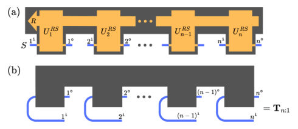
<figcaption class="paper-figure-caption"><b>Fig 1.</b> FIG. 1. (a) A quantum stochastic process encodes all multi- time input-output relations of a system S undergoing open quantum dynamics. The underlying dynamics (orange) may be described by recurrent global unitary evolution of the sys- tem and its complement environment R. An experimenter may interact arbitrarily with S at each time-step t via in- put and output arms, for example by state preparation on ti</figcaption>
</figure>
<figure class="paper-figure-card">
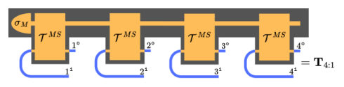
<figcaption class="paper-figure-caption"><b>Fig 2.</b> FIG. 2. A time-homogeneous recurrent quantum circuit model of the underlying dynamics for a 4-step window T4:1 of a quantum stochastic process, consisting of a stationary mem- ory state σM sequentially undergoing fixed system-memory channel T MS.</figcaption>
</figure>
<figure class="paper-figure-card">
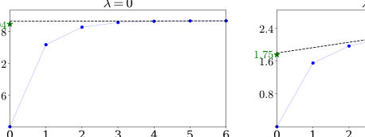
<figcaption class="paper-figure-caption"><b>Fig 3.</b> FIG. 3. √</figcaption>
</figure>
</div>

<p><strong>Summary.</strong> This paper introduces a quantum information-theoretic framework to quantify how much randomness in a quantum process is genuinely unpredictable versus how much is merely structured due to limited memory. By defining the quantum excess entropy, the authors show this quantity equals the quantum mutual information between the past and future halves of the process. This provides a powerful tool to estimate the minimum memory resources needed to simulate complex quantum dynamics.</p>
<p><strong>Why it may be interesting.</strong> This work provides fundamental information-theoretic tools for characterizing the memory content and predictability of open quantum systems, which is crucial for understanding quantum noise and decoherence in physical implementations.</p>
<details>
<summary>Detailed structure</summary>
<p><strong>Main problem.</strong> The paper aims to develop a rigorous quantum measure to distinguish between true, irreducible randomness and structured temporal correlations within a quantum stochastic process.</p>
<p><strong>Main result.</strong> It establishes that the quantum excess entropy ($E$) quantifies the temporal correlations and provides a lower bound on the memory resources required to model the process using a recurrent quantum circuit.</p>
<p><strong>Method.</strong> The authors utilize the Choi state representation of process tensors to define and analyze the quantum entropy rate ($s_T$) and the quantum excess entropy ($E$) for stationary quantum processes.</p>
<p><strong>Model / system.</strong> The analysis focuses on general stationary quantum stochastic processes, modeled by repeated interactions with a quantum memory system ($M$) via a time-homogeneous quantum operation ($T_{MS}$).</p>
<p><strong>Key observables.</strong> Quantum entropy rate ($s_T$), Quantum Excess Entropy ($E$), and Quantum Mutual Information (QMI).</p>
<p><strong>Important parameters / regimes.</strong> The process is assumed to be stationary; the memory state $\sigma_M$ and the noise parameter $\lambda$ are key parameters in simulations.</p>
<p><strong>Assumptions / limitations.</strong> The process is assumed to be stationary, and the analysis relies on the existence of a time-homogeneous recurrent quantum circuit model.</p>
<p><strong>Figures summary.</strong> Figures illustrate the encoding of multi-time input-output relations via the Choi state and show the convergence of the process entropy growth rate and the alignment of the excess entropy with the past-future QMI.</p>
<p><strong>Paper structure.</strong> The paper builds from defining the quantum entropy rate ($s_T$) as the measure of irreducible randomness, then introduces the excess entropy ($E$) to quantify structured correlations, culminating in proving $E$'s equivalence to the QMI between past and future halves, and bounding $E$ by the memory state entropy.</p>
</details>
<details>
<summary>Abstract</summary>
<p>For a stochastic process describing observations of a dynamical system, complexity science provides systematic methods to decompose the information produced into true irreducible randomness, and that which corresponds to structure superficially disguised as random but can in fact be learned and predicted. Such methods then equip vital tools for prediction, control and inference of the system's internal structure. However, quantum analogs remain underdeveloped due to the inherent complications of invasive measurements and quantum correlations. By harnessing the Choi state representation of process tensors which encode multi-time input-output relations, we formulate a convergent measure of irreducible randomness in stationary quantum stochastic processes. This directly enables a measure of temporal correlations which lower bounds the memory resources required to replicate the process via a recurrent quantum circuit.</p>
</details>
<p><sub><a href="#top">↑ back to top</a></sub></p>

<p><a id="paper-2608.26027"></a></p>
<h3 id="immittance-formulas-for-exact-blackbox-quantization-and-divergence-free-effective-models-in-circuit-qed">⭐ <a href="http://arxiv.org/abs/2608.26027v1">Immittance formulas for exact blackbox quantization and divergence-free effective models in circuit QED</a></h3>
<p><strong>Highlighted author(s):</strong> Peter Rabl<br>
<strong>Authors:</strong> Philippe Gigon, Peter Rabl, Adrian Parra-Rodriguez<br>
<strong>Type:</strong> theory · <strong>Category:</strong> other · <strong>PDF:</strong> <a href="https://arxiv.org/pdf/2608.26027v1">https://arxiv.org/pdf/2608.26027v1</a><br>
<strong>Analysis basis:</strong> full PDF text, analyzed in chunks
<strong>Topic relevance:</strong> <code>correlated / nonlocal dissipation</code> <strong>3/5</strong> · <code>methods for driven-dissipative</code> <strong>3/5</strong> · <code>Keldysh / 2PI / non-Gaussian methods</code> <strong>2/5</strong> · <code>driven-dissipative phase transition</code> <strong>2/5</strong> · <code>quantum measurements</code> <strong>2/5</strong> · <code>analog quantum simulation</code> <strong>1/5</strong> · <code>non-equilibrium universality</code> <strong>1/5</strong></p>
<div class="figure-strip-hint">↔ Scroll figures horizontally</div>
<div class="paper-figures-scroll">
<figure class="paper-figure-card">
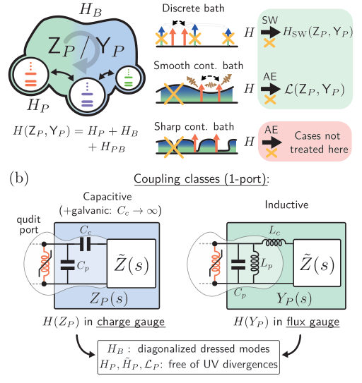
<figcaption class="paper-figure-caption"><b>Fig 1.</b> Figure 1. (a) From the immittance response ZP (s) or YP (s), we construct exact Hamiltonians for superconducting qudit ports linearly coupled to possibly nonreciprocal environments. We also derive effective Hamiltonian or Lindbladian dynam- ics when the environment is either discrete and dispersive or a smooth continuum remaining close to its ground state. Sharply varying baths or additional external driving may be treated using appropriate adiabatic-elimination schemes. (b) General one-port coupling classes considered. Qudits based on nonlinear inductive elements are coupled capacitively (in- ductively) to generic passive sub-environments characterized by ˜Z. Combined with the charge...</figcaption>
</figure>
<figure class="paper-figure-card">
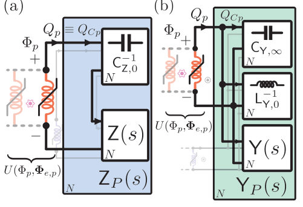
<figcaption class="paper-figure-caption"><b>Fig 2.</b> Figure 2. N nonlinear port degrees of freedom coupled to lin- ear dissipative environments described by (a) impedance or (b) admittance matrices, corresponding to generic (a) capac- itive and (b) inductive coupling. A set of nonlinear parallel inductors defines a port p. Multiport connectivity is shown faintly for simplicity (see Appendices B and C).</figcaption>
</figure>
<figure class="paper-figure-card">
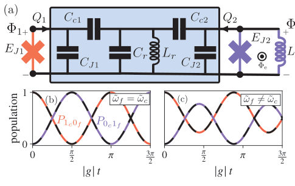
<figcaption class="paper-figure-caption"><b>Fig 3.</b> Figure 4. Resonator-mediated population exchange between |1c, 0f⟩and |0c, 1f⟩for a CPB-like charge qudit and a flux- onium capacitively coupled to the same LC mode (a). The lower panels show (b) the dressed-resonant case, ˜ωc = ˜ωf, and (c) an off-resonant case obtained by shifting the charge-qudit Josephson energy by ∆EJ1/h = 1 MHz from the dressed- resonant working point, thereby retaining a finite effective detuning between the transitions. Solid curves show the exact tripartite dynamics, including the resonator, whereas dashed curves are obtained from the complete effective qudit–qudit Hamiltonian in Eq. (36), constructed using the immittance formulas. The circuit parameters are ωr/(2π)...</figcaption>
</figure>
<figure class="paper-figure-card">
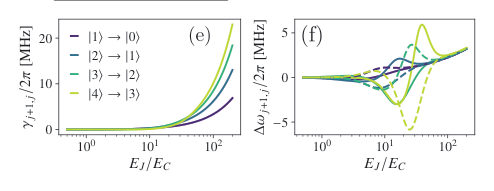
<figcaption class="paper-figure-caption"><b>Fig 4.</b> Figure 5. The transmon qudit capacitively coupled to (a) a semi-infinite and (c) an infinite TL, both of characteristic impedance Z0, can be represented by the equivalent circuit in panel (b), with the impedance seen from the coupling point in the infinite-line case being half that of the semi-infinite line. (d) Coupling parameter G(ω) for R = Z0 and CJ = 10 fF as a function of the coupling capacitance, approaching the galvanic limit (Cc →∞). Panels (e) and (f) show the decay rates and corrections to the transition frequencies, as defined in Eq. (71), for a charge qudit capacitively coupled to a semi-infinite TL. In both panels, Z0 = 50 Ω, CJ = 10 fF, Cc = CJ/50, and EJ is varied to explore...</figcaption>
</figure>
<figure class="paper-figure-card">
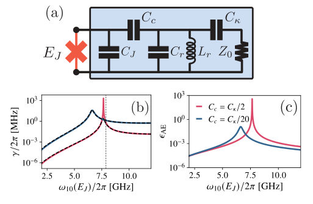
<figcaption class="paper-figure-caption"><b>Fig 5.</b> Figure 6. (a) Transmon qudit (CJ = 200 fF, variable EJ, and ng = 0) capacitively coupled (Cc = CJ/50) to a lossy resonator (Cr = 200 fF, ELr/h = 80 GHz). (b) Decay rate of the transmon for different ratios of Cc/Cκ and (c) valid- ity condition of adiabatic elimination. The result from the impedance formula is compared with the decay rate obtained from the poles of the linearized circuit (dashed lines). The bare resonator frequency is indicated by the dotted line; the actual pole is shifted due to the coupling capacitances.</figcaption>
</figure>
</div>

<p><strong>Summary.</strong> This paper introduces a general framework to derive exact Hamiltonians for superconducting qudits coupled to complex, realistic linear environments characterized by their impedance or admittance. By extending black-box quantization, it yields divergence-free effective models for both dispersive and dissipative regimes. This establishes a scalable route for designing and analyzing large-scale superconducting quantum hardware.</p>
<p><strong>Why it may be interesting.</strong> This work provides a powerful, systematic, and rigorous theoretical tool to model open quantum systems in superconducting circuits, directly addressing issues like spurious divergences in previous treatments.</p>
<details>
<summary>Detailed structure</summary>
<p><strong>Main problem.</strong> The paper aims to provide simple, exact formulas for constructing Hamiltonians describing superconducting qudits coupled to complex, passive linear environments.</p>
<p><strong>Main result.</strong> It successfully derives divergence-free dispersive Hamiltonians and transition-resolved weak-coupling master equations for these coupled systems.</p>
<p><strong>Method.</strong> The method involves characterizing the environment via its impedance or admittance matrices and mapping the environment's port response directly into the Hamiltonian structure using canonical multiport circuit representations.</p>
<p><strong>Model / system.</strong> The system consists of Josephson-junction-based superconducting qudits coupled to arbitrary linear environments (multiport, multimode, nonreciprocal). The theory is built upon extending black-box quantization to these complex settings.</p>
<p><strong>Key observables.</strong> Mode structure, frequency renormalizations, environment-mediated interactions, decay rates, and directional cross couplings.</p>
<p><strong>Important parameters / regimes.</strong> Weak-coupling regime, impedance ($\mathbf{Z}$) or admittance ($\mathbf{Y}$) matrices, and the specific gauge choice (charge or flux gauge).</p>
<p><strong>Assumptions / limitations.</strong> The derivation of effective models is restricted to the two extreme gauges (charge and flux gauges), and the method is best suited for numerical inputs from electromagnetic solvers.</p>
<p><strong>Figures summary.</strong> Figure 1(a) shows constructing exact Hamiltonians from the immittance response for nonreciprocal environments. Figure 2 illustrates coupling nonlinear qudits to linear environments via impedance or admittance.</p>
<p><strong>Paper structure.</strong> The paper builds upon prior circuit quantization methods, details the decomposition of the immittance response, derives the exact Hamiltonian in the chosen gauge, and then applies this framework to various physical circuits.</p>
</details>
<details>
<summary>Abstract</summary>
<p>Building on the first-order circuit quantization method [arXiv:2304.12252, arXiv:2401.09120], we provide simple formulas to construct exact Hamiltonians for Josephson-junction-based superconducting qudits capacitively, inductively, or galvanically coupled to passive linear environments. These environments may be multiport, multimode, discrete or continuous, reciprocal or nonreciprocal, and are characterized directly by their impedance or admittance matrices. In the weak-coupling regime, we further derive \emph{divergence-free} dispersive Hamiltonians for mode-resolved environments and transition-resolved weak-coupling master equations for dissipative continua. Mode structure, frequency renormalizations, environment-mediated interactions, decay rates, and directional cross couplings then follow from the same causal immittance response, while spurious Lamb-shift divergences arising from uncontrolled approximations in previous treatments are made explicit and avoided. We apply the theory to a set of illustrative circuits comprising a discrete resonator filter, finite-band metamaterial environments, nonreciprocal waveguide-QED systems, and superconducting giant atoms, for which analytical response matrices can be obtained, although the method is particularly well suited to numerical responses from electromagnetic solvers or experimental characterization. We thereby extend the black-box quantization framework to multiport, dissipative, and nonreciprocal settings, establishing a simple and scalable route toward optimized and automated electromagnetic design of large-scale superconducting quantum hardware.</p>
</details>
<p><sub><a href="#top">↑ back to top</a></sub></p>

<p><a id="paper-2608.25908"></a></p>
<h3 id="structured-non-locality-and-emergent-locality-in-cavity-qed-many-body-dynamics">⭐ <a href="http://arxiv.org/abs/2608.25908v1">Structured Non-Locality and Emergent Locality in Cavity-QED Many-Body Dynamics</a></h3>
<p><strong>Highlighted author(s):</strong> Darrick E. Chang<br>
<strong>Authors:</strong> Mark A. Oehlgrien, Błażej Jaworowski, Darrick E. Chang, Charlie-Ray Mann<br>
<strong>Type:</strong> theory · <strong>Category:</strong> other · <strong>PDF:</strong> <a href="https://arxiv.org/pdf/2608.25908v1">https://arxiv.org/pdf/2608.25908v1</a><br>
<strong>Analysis basis:</strong> full PDF text, analyzed in chunks
<strong>Topic relevance:</strong> <code>Tavis-Cummings &amp; cavity-many-emitter</code> <strong>3/5</strong> · <code>analog quantum simulation</code> <strong>3/5</strong></p>
<div class="figure-strip-hint">↔ Scroll figures horizontally</div>
<div class="paper-figures-scroll">
<figure class="paper-figure-card">
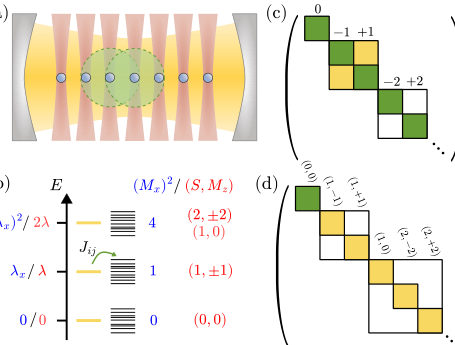
<figcaption class="paper-figure-caption"><b>Fig 1.</b> FIG. 1. (a) A Rydberg-tweezer cavity interface: a delocalized cavity mode (yellow) mediates all-to-all interactions between atoms (blue) trapped by optical tweezers (red), while Rydberg dressing produces short-range interactions (green). (b) We consider two paradigmatic collective models. In the first, λy = 0, the cavity creates degenerate subspaces labeled by (Mx)2, while in the second, λx = λy = λ, the degenerate subspaces are labeled by (S, Mz). The values of (Mx)2</figcaption>
</figure>
<figure class="paper-figure-card">
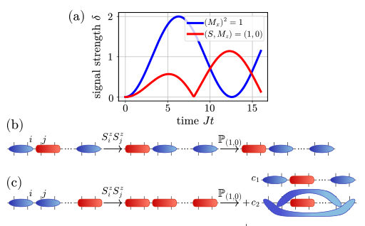
<figcaption class="paper-figure-caption"><b>Fig 2.</b> FIG. 2. (a) Signal strength δ = |⟨OB(t)⟩0 −⟨OB(t)⟩1| versus time Jt for the product-state subspace protocol (blue) and the entangled- subspace protocol (red). The indices 0 and 1 represent Alice’s bit, and Bob’s observable, OB, is 2Sx N (blue) or (SN−1 · SN)2 (red). A non-zero value of δ allows Bob to distinguish Alice’s encoded bit. Because δ is independent of system size N and the separation between Alice and Bob grows with N, both protocols demonstrate distance-independent signaling. (b) &amp; (c) Action of a projected local Ising interaction on sites i and j for two valence-bond configurations in the (S = 1, Mz = 0)-subspace. Blue ovals denote singlets and red rounded squares denote...</figcaption>
</figure>
</div>

<p><strong>Summary.</strong> This paper analyzes many-body dynamics in cavity QED systems where interactions are a mix of local and collective. By projecting the dynamics onto specific subspaces, the authors show that the resulting effective interactions are either purely local (if the subspace is product-state-like) or structured non-local (if the subspace is entangled). This framework reveals a new class of dynamics beyond simple local or fully collective models.</p>
<p><strong>Why it may be interesting.</strong> This work provides a deep theoretical understanding of how global constraints (like total angular momentum) can fundamentally alter the nature of local interactions, leading to structured non-local physics relevant for quantum simulation and quantum information.</p>
<details>
<summary>Detailed structure</summary>
<p><strong>Main problem.</strong> The paper investigates many-body dynamics governed by a mixture of short-range microscopic interactions and long-range, cavity-mediated collective interactions, where neither locality nor full collectivity is a sufficient description.</p>
<p><strong>Main result.</strong> The effective dynamics within a subspace is dictated by whether that subspace admits a local product-state basis; entangled subspaces generate structured non-local dynamics, while product-state subspaces retain local spatial structure.</p>
<p><strong>Method.</strong> The authors analyze the system by projecting the short-range interaction onto subspaces defined by the dominant collective coupling, utilizing techniques involving spherical tensor operators and Wigner-Eckart theorem.</p>
<p><strong>Model / system.</strong> The model is Cavity Quantum Electrodynamics (QED) applied to interacting spin-1/2 systems, described by a generalized XYZ Hamiltonian. The analysis focuses on the effective Hamiltonian derived within specific subspaces (e.g., fixed total spin $S$ or magnetization $M_x$).</p>
<p><strong>Key observables.</strong> Signal strength $\delta(t)$ used to diagnose non-locality, and the structure of the effective Hamiltonian $H_{	ext{eff}}$ (local vs. non-local terms).</p>
<p><strong>Important parameters / regimes.</strong> The ratio of collective coupling strength to short-range coupling ($ \lambda/J_{ij}     o \infty $), and the global spin quantum numbers $(S, M_z)$ or $(M_x)^2$.</p>
<p><strong>Assumptions / limitations.</strong> The analysis relies on the clean conceptual limit where cavity-mediated interactions dominate, allowing for spectral separation into distinct subspaces.</p>
<p><strong>Figures summary.</strong> Figures illustrate the physical setup (Rydberg-tweezer cavity), the block-diagonal structure of the effective Hamiltonian distinguishing local and non-local interactions, and the time evolution of signal strength $\delta$ demonstrating non-local signaling.</p>
<p><strong>Paper structure.</strong> The paper progresses by first establishing the physical context (Cavity-QED), then analyzing the spectral separation into subspaces, deriving the effective Hamiltonians for different subspaces (e.g., $(M_x)^2=1$ vs. $(S, M_z)$), and finally using non-locality diagnostics (signal strength) to confirm the structured non-local nature of the dynamics.</p>
</details>
<details>
<summary>Abstract</summary>
<p>Cavity quantum electrodynamics (QED) modifies many-body systems by combining cavity-mediated collective interactions with microscopic short-range interactions. The resulting dynamics lies between the local and fully collective limits, such that neither locality nor collectivity alone provides a complete organizing principle. In the clean conceptual limit of dominant collective coupling, we show that the effective dynamics within each energetically isolated subspace is generically controlled by whether that subspace admits a local product-state basis, and identify exceptions imposed by angular-momentum selection rules. Product-state subspaces generically retain the spatial structure of the microscopic interaction. Entangled subspaces instead generically dress local processes with global operators, generating non-local but highly structured dynamics. We illustrate this by deriving the corresponding effective Hamiltonians in two representative cavity-QED spin models. The cavity-isolated subspace thus becomes a resource for generating competing short-range interactions or globally conditioned local processes, opening a class of many-body dynamics without local or fully collective counterparts.</p>
</details>
<p><sub><a href="#top">↑ back to top</a></sub></p>

<p><a id="paper-2608.25407"></a></p>
<h3 id="dynamical-development-of-long-range-spatial-coherence-in-non-equilibrium-bosonic-condensation"><a href="http://arxiv.org/abs/2608.25407v1">Dynamical development of long-range spatial coherence in non-equilibrium bosonic condensation</a></h3>
<p><strong>Authors:</strong> Bianca Rae Fabricante, Dąbrówka Biegańska, Paolo Comaron, Mateusz Król, Matthias Wurdack, Maciej Pieczarka, Mark Steger, David W. Snoke, Kenneth West, Daniele Sanvitto, Dario Ballarini, Dimitrios Trypogeorgos, Loren N. Pfeiffer, Andrew G. Truscott, Marzena Szymańska, Elena A. Ostrovskaya, Eliezer Estrecho<br>
<strong>Type:</strong> both · <strong>Category:</strong> other · <strong>PDF:</strong> <a href="https://arxiv.org/pdf/2608.25407v1">https://arxiv.org/pdf/2608.25407v1</a><br>
<strong>Analysis basis:</strong> full PDF text, analyzed in chunks
<strong>Topic relevance:</strong> 🔥 <code>driven-dissipative phase transition</code> <strong>4/5</strong> · <code>Tavis-Cummings &amp; cavity-many-emitter</code> <strong>3/5</strong> · <code>analog quantum simulation</code> <strong>3/5</strong> · <code>methods for driven-dissipative</code> <strong>3/5</strong> · <code>non-equilibrium universality</code> <strong>3/5</strong> · <code>quantum optics experiment</code> <strong>3/5</strong> · <code>Keldysh / 2PI / non-Gaussian methods</code> <strong>2/5</strong> · <code>correlated / nonlocal dissipation</code> <strong>2/5</strong> · <code>Dicke superradiance</code> <strong>1/5</strong> · <code>scars &amp; prethermalization</code> <strong>1/5</strong> · <code>superradiant laser</code> <strong>1/5</strong></p>
<div class="figure-strip-hint">↔ Scroll figures horizontally</div>
<div class="paper-figures-scroll">
<figure class="paper-figure-card">
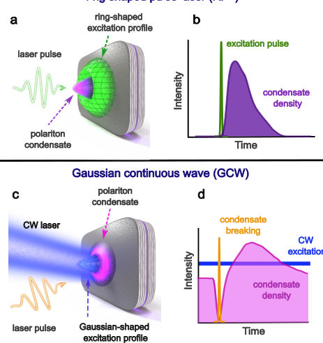
<figcaption class="paper-figure-caption"><b>Fig 1.</b> Fig. 1. Two experimental configurations. a) In the ring-shaped pulsed laser (RPL) pump configuration, a pump pulse creates the dynamical polariton condensate trapped inside a ring- shaped excitonic reservoir generated by the pump. The con- densate forms after the arrival of the pulse and subsequently decays, as shown in (b). c) In the Gaussian continuous wave pump (GCW) configuration, a steady-state condensate flow- ing away from the excitation spot is formed. A red-detuned laser pulse is then used to break the condensate. The pulse ini- tiates a rapid polariton density depletion followed by a rapid growth and recovery of the condensate, as shown in (d).</figcaption>
</figure>
<figure class="paper-figure-card">
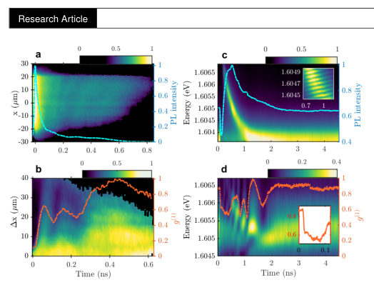
<figcaption class="paper-figure-caption"><b>Fig 2.</b> Fig. 2. Typical time evolution of the condensate density and g(1) for (a,b) RPL and (c,d) GCW configurations, with the ra- tios of the pump power relative to the condensation threshold P/Pth = 26 and Bp/Bp,0 = 12, respectively. a) Condensate density evolution (quantified by PL intensity heatmap) and its value integrated over the spatial (x) dimension and normal- ized by the peak value (blue line). b) Condensate coherence heatmap (shown for half of the spatial range, x &gt; 0) and g(1)</figcaption>
</figure>
<figure class="paper-figure-card">
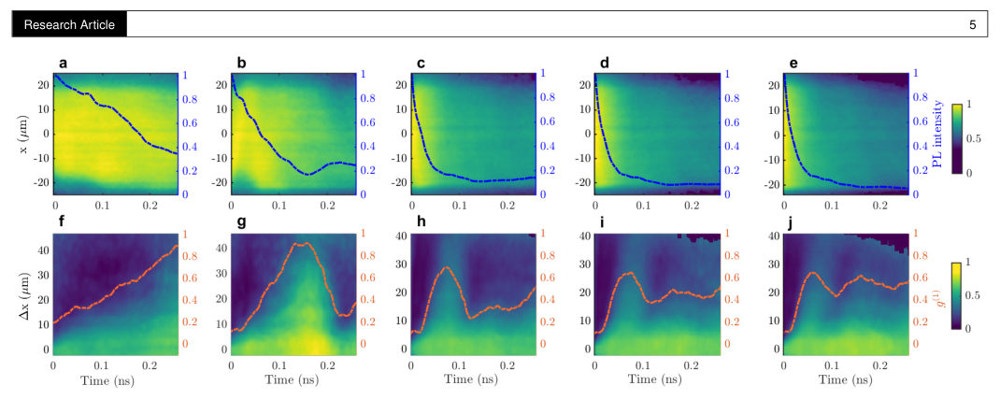
<figcaption class="paper-figure-caption"><b>Fig 3.</b> Fig. 3. Time-resolved condensate PL and g(1) heatmaps for the excitonic fraction |X|2 = 0.50 and the pump power ratio P/Pth of (a,f) 4, (b,g) 6, (c,h) 17, (d,i) 22, and (e,j) 26 in the TCO regime of the RPL experiment. The blue line is the condensate density quantified by integrating the PL intensity over the spatial (x) dimension and normalizing it by the peak value. The orange line is the spatial coherence integrated over the spatial coordinate (x) and normalized to its peak value.</figcaption>
</figure>
<figure class="paper-figure-card">
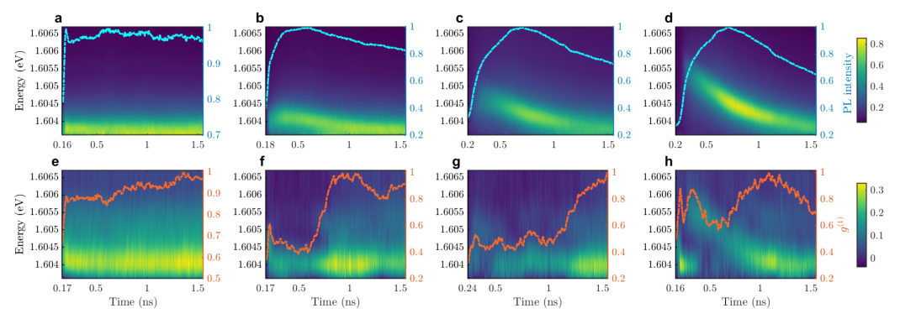
<figcaption class="paper-figure-caption"><b>Fig 4.</b> Fig. 4. Time-resolved condensate PL and g(1) heatmaps for the breaking pulse power ratio Bp/Bp,0 of (a,e) 1, (b,f) 2, (c,g) 4, and (d,h) 8 in the TCO regime of the GCW experiment, after the condensate-breaking pulse. Bp,0 is the threshold pulse power for breaking the condensate. The blue line is the total detected PL intensity at each time normalized to its peak value. The orange line is the spatial coherence integrated along the vertical axis normalized to its peak value.</figcaption>
</figure>
<figure class="paper-figure-card">
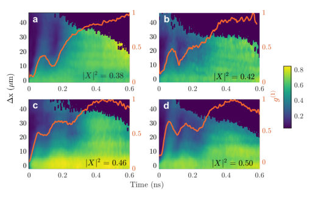
<figcaption class="paper-figure-caption"><b>Fig 5.</b> Fig. 5. Dependence of spatial coherence dynamics on the ex- citonic fraction in the RPL configuration. (a-d) Time-resolved g(1) profile heatmaps at increasing (from a to d) excitonic frac- tion with a fixed pump power (P/Pth ≈26). The orange curve is g(1) integrated (along x) and normalized to its peak value.</figcaption>
</figure>
</div>

<p><strong>Summary.</strong> This paper investigates how long-range spatial coherence emerges in exciton-polariton condensates that are driven far from equilibrium. Using time-resolved experiments and simulations, the authors demonstrate that coherence develops in two distinct phases: an initial, oscillatory interaction-driven phase, followed by a stable, high-coherence steady state. This sheds light on the complex, non-equilibrium physics governing bosonic condensation.</p>
<p><strong>Why it may be interesting.</strong> This work provides deep insight into the non-equilibrium dynamics of coherence formation in cavity QED systems, offering a detailed picture of how coherence builds up beyond simple steady-state assumptions.</p>
<details>
<summary>Detailed structure</summary>
<p><strong>Main problem.</strong> The study investigates the dynamical development of long-range spatial coherence in non-equilibrium bosonic condensation, focusing on the temporal evolution of coherence as the condensate forms.</p>
<p><strong>Main result.</strong> Spatial coherence develops through two distinct stages: an early-time, interaction-driven stage featuring transient oscillations, followed by a persistent, spatially-uniform steady-state regime.</p>
<p><strong>Method.</strong> The research combines time-resolved experiments (using pulsed and continuous wave laser excitation) with numerical modeling to track coherence dynamics.</p>
<p><strong>Model / system.</strong> The system is an exciton-polariton condensate formed in a microcavity, which is a driven-dissipative, non-equilibrium bosonic system.</p>
<p><strong>Key observables.</strong> Spatial coherence (measured via the first-order correlation function, g^(1)), condensate density, and coherence length (l_coh).</p>
<p><strong>Important parameters / regimes.</strong> Detuning ($\Delta$), excitation power relative to the threshold ($P/P_{th}$), and the excitation configuration (Ring-Shaped Pulsed Laser vs. Gaussian Continuous Wave).</p>
<p><strong>Assumptions / limitations.</strong> The early-time dynamics are attributed to underlying microscopic processes of energy relaxation and interactions, distinct from simple density oscillations.</p>
<p><strong>Figures summary.</strong> Figures illustrate the experimental setups (RPL and GCW), time-resolved measurements of g^(1) and density, and how coherence length evolves across different detunings and pumping powers.</p>
<p><strong>Paper structure.</strong> The paper systematically explores the coherence dynamics using multiple experimental setups (RPL, GCW) and varying physical parameters (detuning, pump power), confirming the two-stage coherence development across different regimes.</p>
</details>
<details>
<summary>Abstract</summary>
<p>Development of spontaneous coherence is one of the hallmarks of bosonic condensation in a variety of physical systems, such as cold atoms, confined photons, and hybrid light-matter quasiparticles like exciton polaritons in semiconductors. While spatial coherence is well understood once a steady-state condensate has been established, its temporal evolution as the condensate forms is largely unexplored. Here, we explore the dynamical formation of a non-equilibrium, driven-dissipative exciton-polariton condensate through both time-resolved experiments and numerical modeling. Our study reveals that the spatial coherence is established through two distinct stages. The early-time stage is interaction-driven and features transient oscillations in spatial coherence. This stage is followed by a steady-state regime characterized by a spatially-uniform high degree of coherence that extends over the entire size of the system and persists over time. These stages of spatial coherence development occur in both free flowing and confined exciton-polariton systems that undergo a quench - rapid growth of the condensate starting from two different initial settings. Our study offers a deep insight into the process by which long-range spatial coherence is established in a non-equilibrium bosonic condensate.</p>
</details>
<p><sub><a href="#top">↑ back to top</a></sub></p>

<p><a id="paper-2608.25101"></a></p>
<h3 id="feedback-enabled-magnomechanics-in-lithium-ferrite"><a href="http://arxiv.org/abs/2608.25101v1">Feedback-enabled magnomechanics in lithium ferrite</a></h3>
<p><strong>Authors:</strong> Mehri Ebrahimi, Yunhu Huang, Ali Rashedi, John P. Davis<br>
<strong>Type:</strong> experiment · <strong>Category:</strong> other · <strong>PDF:</strong> <a href="https://arxiv.org/pdf/2608.25101v1">https://arxiv.org/pdf/2608.25101v1</a><br>
<strong>Analysis basis:</strong> full PDF text, analyzed in chunks
<strong>Topic relevance:</strong> 🔥 <code>quantum measurements</code> <strong>4/5</strong> · <code>analog quantum simulation</code> <strong>3/5</strong> · <code>correlated / nonlocal dissipation</code> <strong>3/5</strong> · <code>driven-dissipative phase transition</code> <strong>3/5</strong> · <code>methods for driven-dissipative</code> <strong>3/5</strong> · <code>quantum optics experiment</code> <strong>3/5</strong> · <code>Keldysh / 2PI / non-Gaussian methods</code> <strong>2/5</strong> · <code>non-equilibrium universality</code> <strong>2/5</strong> · <code>Tavis-Cummings &amp; cavity-many-emitter</code> <strong>1/5</strong> · <code>interference shaping light</code> <strong>1/5</strong></p>
<div class="figure-strip-hint">↔ Scroll figures horizontally</div>
<div class="paper-figures-scroll">
<figure class="paper-figure-card">
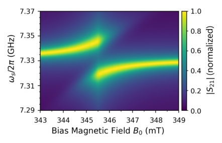
<figcaption class="paper-figure-caption"><b>Fig 1.</b> FIG. 1. Normalized transmission spectrum |S21| as a function of bias magnetic field B0, showing the avoided crossing between the cavity and magnon modes. The resulting upper and lower branches correspond to the hybridized cavity–magnon polariton modes.</figcaption>
</figure>
<figure class="paper-figure-card">
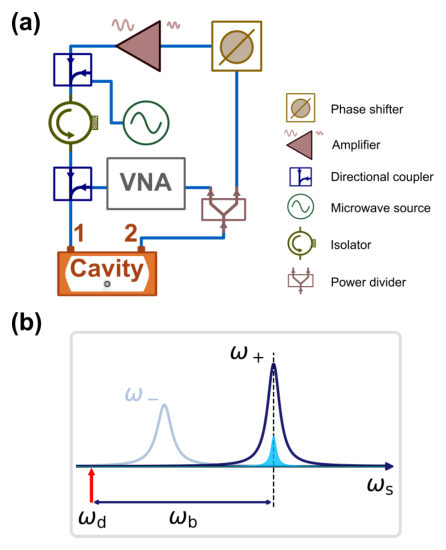
<figcaption class="paper-figure-caption"><b>Fig 2.</b> FIG. 2. (a) Schematic of the cavity magnomechanical system and microwave feedback loop. The LiFe sphere is positioned inside a copper microwave cavity and probed by a vector network analyzer (VNA). A fraction of the cavity output is routed through the feed- back loop, where the signal is amplified, phase shifted, and subse- quently fed back into the cavity. An independent microwave source provides the drive tone for the magnomechanical measurements. (b) Frequency schematic of the measurement showing the drive tone, ωd, approximately one mechanical frequency, ωb, red-detuned from the upper-polariton mode, ω+.</figcaption>
</figure>
<figure class="paper-figure-card">
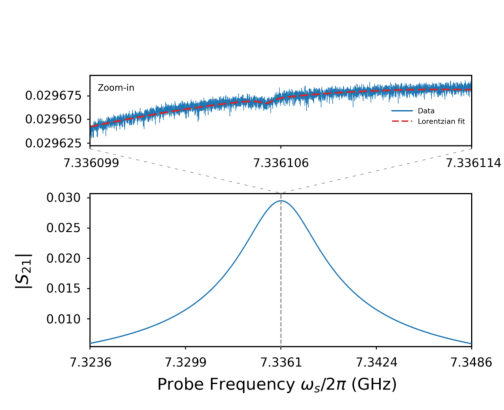
<figcaption class="paper-figure-caption"><b>Fig 3.</b> FIG. 3. Transmission amplitude |S21| of the upper polariton mea- sured without feedback at a drive power of 25 dBm. The expanded view in the upper reveals the weak magnomechanical feature near the mechanical resonance, which is barely detectable against the broader upper-polariton response.</figcaption>
</figure>
<figure class="paper-figure-card">
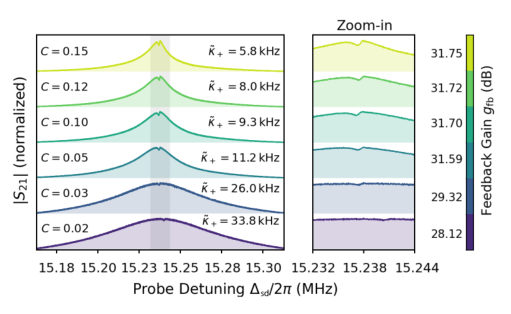
<figcaption class="paper-figure-caption"><b>Fig 4.</b> FIG. 4. Feedback-enabled observation of magnomechanically in- duced transparency in LiFe. Normalized transmission |S21| is shown as a function of probe detuning ∆sd = ωs −ωd for increasing feed- back gain gfb (bottom to top), with constant pump tone power, Pd = 22.6dBm. The feedback suppresses the upper-polariton linewidth from κ+/2π = 3.53 MHz without feedback to ˜κ+/2π = 33.8 kHz and 5.8 kHz at feedback gains gfb = 28.12 dB and 31.75 dB, respec- tively, while increasing the extracted magnomechanical cooperativity from C = 1.9×10−3 without feedback to C = 0.02 and 0.15, respec- tively. Curves are vertically offset for clarity and are color coded by feedback gain. The right panel enlarges...</figcaption>
</figure>
<figure class="paper-figure-card">
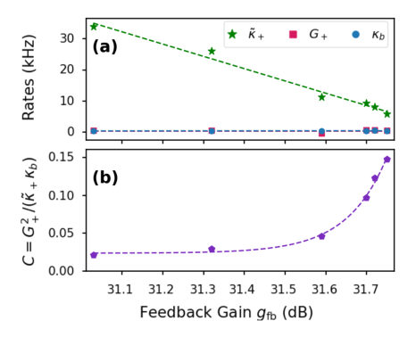
<figcaption class="paper-figure-caption"><b>Fig 5.</b> FIG. 5. Effect of coherent feedback on the magnomechanical inter- action. (a) Extracted effective upper-polariton linewidth ˜κ+, drive- enhanced upper-polariton–phonon coupling rate G+, and mechani- cal linewidth κb as functions of the feedback gain gfb. Increasing the feedback gain strongly reduces ˜κ+, while G+ and κb remain com- paratively small. Dashed lines are guides to the eye. (b) Correspond- ing magnomechanical cooperativity C = G2+/( ˜κ+κb) as a function of feedback gain. The suppression of the upper-polariton linewidth results in a pronounced increase in the cooperativity. The dashed line is a guide to the eye.</figcaption>
</figure>
</div>

<p><strong>Summary.</strong> This paper reports the first observation of cavity magnomechanics in Lithium ferrite (LiFe) by utilizing coherent microwave feedback. The feedback technique is crucial because it suppresses cavity dissipation, dramatically increasing the measurable cooperativity. This allows the researchers to quantify the weak magnomechanical coupling in LiFe, demonstrating a powerful method for probing subtle quantum interactions.</p>
<p><strong>Why it may be interesting.</strong> This work is highly relevant as it uses active dissipation engineering (feedback) to access and quantify weak coupling regimes, a core theme in open quantum systems and cavity QED.</p>
<details>
<summary>Detailed structure</summary>
<p><strong>Main problem.</strong> The primary challenge was observing and characterizing the weak magnomechanical coupling in Lithium ferrite (LiFe) when the mechanical signal was otherwise obscured by cavity dissipation.</p>
<p><strong>Main result.</strong> The authors successfully demonstrated cavity magnomechanics in LiFe using coherent microwave feedback, significantly increasing the measurable cooperativity and revealing a clear magnomechanically induced transparency feature.</p>
<p><strong>Method.</strong> The technique involves implementing coherent microwave feedback into the cavity to suppress polariton dissipation, thereby enhancing the detectability of the weak mechanical interaction.</p>
<p><strong>Model / system.</strong> The system uses a single-crystal LiFe sphere coupled to a microwave cavity, exhibiting cavity magnonics and cavity magnomechanics. The dynamics are analyzed using cavity field equations modified by the feedback loop.</p>
<p><strong>Key observables.</strong> Polariton linewidth ($ ilde{\kappa}_{\pm}$), Magnomechanical Cooperativity ($C$), and the Magnomechanically Induced Transparency (MMIT) feature.</p>
<p><strong>Important parameters / regimes.</strong> The single-magnon coupling rate ($g_{mb}/2\pi$) for LiFe ($0.26 	ext{ mHz}$) and the enhancement factor provided by the feedback gain ($g_{fb}$).</p>
<p><strong>Assumptions / limitations.</strong> The analysis assumes that coherent feedback can effectively engineer the cavity dissipation to reveal underlying weak coupling mechanisms.</p>
<p><strong>Figures summary.</strong> Figures illustrate the avoided crossing defining polariton branches, the feedback setup, and crucially, show the MMIT feature becoming resolvable as the microwave feedback gain increases.</p>
<p><strong>Paper structure.</strong> The paper establishes the physical system, details the necessity and implementation of coherent microwave feedback, presents quantitative measurements showing the enhancement of cooperativity and the resolution of the MMIT feature, and concludes with a comparison of the coupling strength between LiFe and YIG.</p>
</details>
<details>
<summary>Abstract</summary>
<p>Lithium ferrite (LiFe) is a promising material for cavity magnonics because its large spin density enables strong coupling between magnons and microwave photons. Its potential for cavity magnomechanics, however, has remained unexplored. Here, we observe magnomechanical interactions in a single-crystal LiFe sphere using coherent microwave feedback to suppress dissipation of the cavity--magnon polariton. In the absence of sufficient feedback, the narrow mechanical response is difficult to resolve against the much broader polariton background. Increasing the feedback gain reduces the polariton linewidth and correspondingly increases the magnomechanical cooperativity, revealing a clear magnomechanically induced transparency feature. In the measurements presented here, the effective upper-polariton linewidth is reduced from $3.53~\mathrm{MHz}$ without feedback to $5.8~\mathrm{kHz}$ in the presence of feedback, while the measured cooperativity increases from $C=1.9\times10^{-3}$ to $C=0.15$. These measurements provide, to our knowledge, the first observation of cavity magnomechanics in LiFe and demonstrate coherent feedback as a practical route for accessing weak interactions that would otherwise be obscured by dissipation.</p>
</details>
<p><sub><a href="#top">↑ back to top</a></sub></p>

<p><a id="paper-2608.24993"></a></p>
<h3 id="mixed-state-symmetry-protected-topology-and-strong-to-weak-spontaneous-symmetry-breaking-in-a-superconducting-qubit-array"><a href="http://arxiv.org/abs/2608.24993v1">Mixed-State Symmetry-Protected Topology and Strong-to-Weak Spontaneous Symmetry Breaking in a Superconducting Qubit Array</a></h3>
<p><strong>Authors:</strong> Qian Cao, Zhen Bi, Kater W. Murch<br>
<strong>Type:</strong> experiment · <strong>Category:</strong> statistical mechanics · <strong>PDF:</strong> <a href="https://arxiv.org/pdf/2608.24993v1">https://arxiv.org/pdf/2608.24993v1</a><br>
<strong>Analysis basis:</strong> full PDF text, analyzed in chunks
<strong>Topic relevance:</strong> 🔥 <code>QC/QI experiment</code> <strong>4/5</strong> · <code>analog quantum simulation</code> <strong>3/5</strong> · <code>correlated / nonlocal dissipation</code> <strong>3/5</strong> · <code>driven-dissipative phase transition</code> <strong>3/5</strong> · <code>quantum measurements</code> <strong>3/5</strong> · <code>methods for driven-dissipative</code> <strong>2/5</strong> · <code>non-equilibrium universality</code> <strong>2/5</strong> · <code>Full counting statistics</code> <strong>1/5</strong> · <code>Keldysh / 2PI / non-Gaussian methods</code> <strong>1/5</strong></p>
<div class="figure-strip-hint">↔ Scroll figures horizontally</div>
<div class="paper-figures-scroll">
<figure class="paper-figure-card">
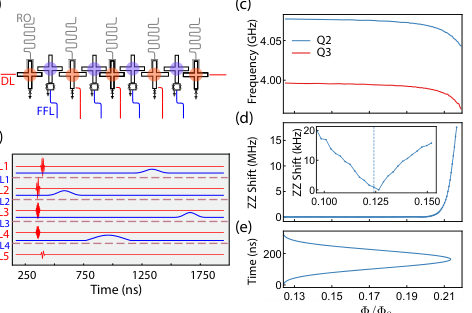
<figcaption class="paper-figure-caption"><b>Fig 1.</b> FIG. 1. Cluster state preparation in a supercon- ducting qubit array. (a) Schematic of the five-qubit device with nearest-neighbor coupling mediated by tunable couplers and dispersive readout via readout resonators. (b) Pulse se- quence used in preparing the one-dimensional cluster state: qubits are initialized in |+⟩states via resonant rotations (red pulses on the drive lines) and entangled via sequential nearest- neighbor controlled-Z (CZ) gates (adiabatic baseband pulses on the fast flux lines). (c–e) Implementation of the CZ gate using an adiabatic flux pulse. As an example, (c) displays the dependence of Q2 and Q3’s frequencies on the coupler’s flux. (d) Displays the measured ZZ...</figcaption>
</figure>
<figure class="paper-figure-card">
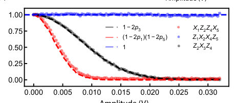
<figcaption class="paper-figure-caption"><b>Fig 2.</b> FIG. 2. Characterization of average symmetry- protected topological order under measurement- induced dephasing. (a) Circuit diagram for probing the response of different average string orders to dephasing strengths on p1, p3, p5 on Q1, Q3, Q5. (b) Ramsey measure- ments are used to characterize the effective dephasing channel induced by driving the qubits’ readout resonators at variable amplitude, from which a dephasing strength pi is extracted. (c) Measured nonlocal string order parameters as a function of measurement strength, demonstrating the persistence of SPT order over a range of conditions. The observed behav- ior is consistent with the selective robustness of string or- der expected...</figcaption>
</figure>
<figure class="paper-figure-card">
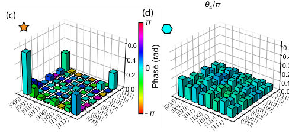
<figcaption class="paper-figure-caption"><b>Fig 3.</b> FIG. 3. Measurement-induced interpolation between long-range-entangled and separable states. (a) Circuit for tuning between measurement-induced orders in the cluster state: Q2 and Q4 are measured in a tunable basis defined by the rotation angles θ2 and θ4, followed by state tomography conditioned on the measurement outcomes. (b) The Z1Z5 ex- pectation value versus θ2 and θ4. (c) Reconstructed density matrix via conditioned quantum state tomography of Q1, Q3, and Q5 for θ2 = θ4 = 0, showing preparation of a GHZ state with 67% fidelity. (d) Reconstructed density matrix for mea- surement angles θ2 = θ4 = π/2 demonstrating fidelity to the paramagnetic |+⟩1,3,5 of 89%.</figcaption>
</figure>
</div>

<p><strong>Summary.</strong> This paper experimentally investigates how topological order survives and changes in superconducting qubits subjected to decoherence and measurement. By analyzing string order and fidelity correlators, the authors distinguish between different types of symmetry protection, providing a superconducting platform to study the transition from strong to weak spontaneous symmetry breaking in mixed states.</p>
<p><strong>Why it may be interesting.</strong> This work provides a concrete, circuit-based realization for probing subtle concepts in topological order and symmetry breaking in open quantum systems, bridging abstract theory with measurable superconducting circuit physics.</p>
<details>
<summary>Detailed structure</summary>
<p><strong>Main problem.</strong> The study investigates how symmetry-protected topological (SPT) order manifests in mixed quantum states, specifically examining the transition between strong-to-weak spontaneous symmetry breaking (SW-SSB) and average SPT order.</p>
<p><strong>Main result.</strong> The experiments demonstrate that underlying SPT correlations can be revealed through distinct signatures—such as robust string order under dephasing or finite nonlinear fidelity correlators—depending on whether the measurement record is conditioned or averaged.</p>
<p><strong>Method.</strong> The research uses superconducting qubits to prepare and probe a 1D cluster state, employing controlled dephasing, measurement-induced state preparation, and advanced correlator measurements.</p>
<p><strong>Model / system.</strong> The physical platform is a five-qubit superconducting transmon array initialized in a cluster state, governed by a stabilizer Hamiltonian. The analysis focuses on symmetry protection ($Z_2 	imes Z_2$) and the effects of open system dynamics (decoherence/measurement).</p>
<p><strong>Key observables.</strong> Nonlocal string order parameters ($S_o, S'_o, S_e$), conventional long-range correlators, nonlinear fidelity correlators ($F_{SWSSB}$), and cluster-state fidelity ($F_{LB}$).</p>
<p><strong>Important parameters / regimes.</strong> Dephasing strengths ($\pi_i$), measurement bases ($  heta_i$), and the ratio distinguishing strong vs. average symmetry protection.</p>
<p><strong>Assumptions / limitations.</strong> The analysis assumes that measurement-induced phase accumulation can be mitigated using rotationally invariant combinations of correlators, and that readout errors can be corrected via Bayesian unfolding.</p>
<p><strong>Figures summary.</strong> Figures illustrate the experimental setup, the pulse sequence for cluster state preparation, the decay of string order parameters under dephasing, and the measurement of various correlators.</p>
<p><strong>Paper structure.</strong> The paper progresses by first characterizing the ideal SPT order via string order, then introducing controlled dephasing to observe the transition to ASPT order, and finally analyzing measurement-conditioned states to reveal signatures of SW-SSB.</p>
</details>
<details>
<summary>Abstract</summary>
<p>We experimentally investigate how symmetry-protected topological order in a one-dimensional cluster state is transformed by measurement and decoherence in a five-qubit superconducting array. We first characterize the state's nonlocal string order and show that controlled dephasing selectively suppresses one symmetry sector while leaving the other robust, consistent with average symmetry-protected topological order. We then measure one sublattice in a tunable basis and show that the remaining qubits are driven between a long-range-entangled GHZ state and a paramagnetic state. When the measurement record is discarded, the conventional long-range correlator vanishes while a nonlinear fidelity correlator remains finite, providing a finite-size signature of strong-to-weak spontaneous symmetry breaking. These experiments demonstrate how conditioning, averaging, and decoherence reveal distinct manifestations of order encoded in the same underlying cluster state, and establish a superconducting-circuit setting for probing mixed-state symmetry and topology.</p>
</details>
<p><sub><a href="#top">↑ back to top</a></sub></p>

<p><a id="paper-2608.26082"></a></p>
<h3 id="yang-lee-criticality-as-a-dissipative-dynamical-phase-transition-quantum-simulation-of-non-hermitian-physics-without-post-selection"><a href="http://arxiv.org/abs/2608.26082v1">Yang-Lee Criticality as a Dissipative Dynamical Phase Transition: Quantum Simulation of non-Hermitian Physics without Post-selection</a></h3>
<p><strong>Authors:</strong> Stephen W. Yan<br>
<strong>Type:</strong> theory · <strong>Category:</strong> statistical mechanics · <strong>PDF:</strong> <a href="https://arxiv.org/pdf/2608.26082v1">https://arxiv.org/pdf/2608.26082v1</a><br>
<strong>Analysis basis:</strong> full PDF text, analyzed in chunks
<strong>Topic relevance:</strong> 🔥 <code>driven-dissipative phase transition</code> <strong>4/5</strong> · 🔥 <code>methods for driven-dissipative</code> <strong>4/5</strong> · <code>analog quantum simulation</code> <strong>3/5</strong> · <code>correlated / nonlocal dissipation</code> <strong>3/5</strong> · <code>non-equilibrium universality</code> <strong>3/5</strong> · <code>Keldysh / 2PI / non-Gaussian methods</code> <strong>2/5</strong> · <code>quantum measurements</code> <strong>2/5</strong></p>
<div class="figure-strip-hint">↔ Scroll figures horizontally</div>
<div class="paper-figures-scroll">
<figure class="paper-figure-card">
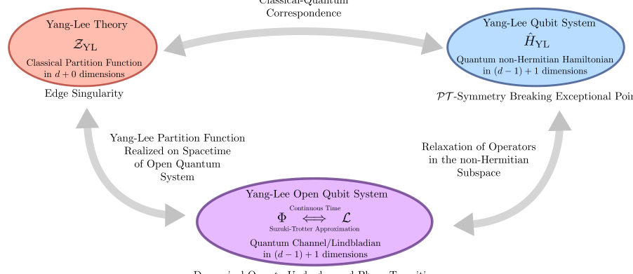
<figcaption class="paper-figure-caption"><b>Fig 1.</b> Figure 1: Overview of the main ideas of this paper allowing us to realize Yang-Lee theory in an open quantum system without the use of post-selection. The classical partition function ZYL is related to ˆHYL through the standard classical-quantum mapping which in turn emerges as the description of the decay of operators in the non-Hermitian subspace of an open quantum system.</figcaption>
</figure>
<figure class="paper-figure-card">
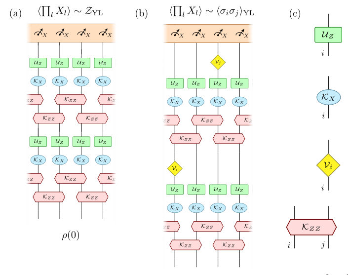
<figcaption class="paper-figure-caption"><b>Fig 2.</b> Figure 2: In (a), we diagram the quantum circuit which realizes ˆHYL and consequently, the Yang-Lee theory with engineered dissipation but without post-selection. At the final time-step, we measure Q</figcaption>
</figure>
<figure class="paper-figure-card">
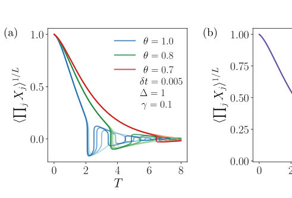
<figcaption class="paper-figure-caption"><b>Fig 3.</b> Figure 3: The expectation value ⟨Q</figcaption>
</figure>
<figure class="paper-figure-card">
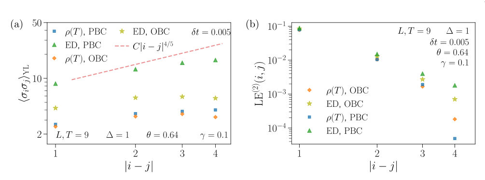
<figcaption class="paper-figure-caption"><b>Fig 4.</b> Figure 4: Two-point correlation functions at the critical point θ = 0.64, γ = 0.1, ∆= 1. In (a), we plot ⟨σiσj⟩YL of the Yang-Lee theory obtained by inserting V = eiπZ/4 at sites (i, j) on an equal-time slice. In red, we plot the ∝|i −j|4/5 scaling predicted by the Yang-Lee conformal field theory. In (b), we plot LE(2)(i, j), also obtained by inserting V at sites (i, j) at time t = T/2 except the bulk dynamics are generated by L, L† for t &lt; T/2, t &gt; T/2, respectively. In both, ρ(T) (squares) indicates the correlator obtained by directly time-evolving ρ(T) under L while ED (triangle, star) indicates the correlator measured in the left/right ground eigenstates of ˆHYL to which ρ(T) is...</figcaption>
</figure>
</div>

<p><strong>Summary.</strong> This paper shows how to simulate the Yang-Lee critical point, a non-Hermitian physical phenomenon, using the controlled dissipation of an open quantum system. By engineering the Lindbladian evolution, the system's dynamics effectively mimic the non-Hermitian Hamiltonian, allowing for direct measurement of critical correlation functions without relying on post-selection. This establishes a general method for simulating arbitrary non-Hermitian physics on near-term quantum hardware.</p>
<p><strong>Why it may be interesting.</strong> This work provides a powerful, physically realizable framework for simulating non-Hermitian quantum dynamics, which is crucial for understanding phenomena like exceptional points and non-unitary statistical mechanics, directly applicable to quantum simulation hardware.</p>
<details>
<summary>Detailed structure</summary>
<p><strong>Main problem.</strong> The paper addresses the challenge of realizing the Yang-Lee critical point, which is governed by a non-Hermitian theory, as a physical process in an open quantum system without resorting to post-selection techniques.</p>
<p><strong>Main result.</strong> It demonstrates that the Yang-Lee theory can be effectively described by the non-Hermitian generator of the open system's Lindbladian evolution, allowing for the direct measurement of critical correlation functions.</p>
<p><strong>Method.</strong> The approach involves mapping the classical Yang-Lee model to the time evolution of an open quantum system governed by a Lindbladian superoperator, which is then shown to be equivalent to non-Hermitian Hamiltonian dynamics in a doubled Hilbert space.</p>
<p><strong>Model / system.</strong> The system is an open quantum system of qubits evolving under a Lindbladian. This dynamics is engineered to mimic the non-Hermitian time evolution associated with the Yang-Lee transfer matrix, which describes the critical point of the Ising model in an imaginary field.</p>
<p><strong>Key observables.</strong> Spin correlation functions, Loschmidt Echo correlator, and the time-dependence of linear observables transitioning from underdamped to overdamped decay.</p>
<p><strong>Important parameters / regimes.</strong> Tunable parameters ($   heta, \Delta, \gamma$) controlling the competition between unitary and dissipative dynamics, and the dimensionless field $h = 	heta/\Delta$.</p>
<p><strong>Assumptions / limitations.</strong> The construction relies on the existence of an extensive number of weak-symmetries of the Lindbladian, and the analysis often involves approximations in the continuous-time limit.</p>
<p><strong>Figures summary.</strong> Figure 1 provides an overview of the mapping from the Yang-Lee partition function to the non-Hermitian Hamiltonian. Figure S1 illustrates the quantum circuit realizing the nearest-neighbor Kraus operator.</p>
<p><strong>Paper structure.</strong> The paper first establishes the mapping from the classical Yang-Lee model to the open quantum system dynamics. It then details the mathematical machinery, including the use of the doubled Hilbert space and the Lindbladian evolution. Finally, it analyzes specific observables and demonstrates the connection to the critical point and general non-Hermitian embedding.</p>
</details>
<details>
<summary>Abstract</summary>
<p>We show that the $d+0$-dimensional Yang-Lee theory describing classical Ising spins in an imaginary magnetic field can be realized, without post-selection, within a $(d-1)+1$ open quantum system whose dynamics consist of local unitaries and engineered dissipation. Competition between the coherent unitary and dissipative dynamics drives a transition wherein the time-dependence of a particular class of linear observables changes from damped oscillatory "underdamped" to purely exponential "overdamped" decay. Our construction relies on an extensive number of weak-symmetries of the Lindbladian fixed by the choice of observable but is otherwise exact. Consequently, we show that the dynamics are described by the non-Hermitian generator of the Yang-Lee transfer matrix, leading to an effective Yang-Lee theory defined on the spacetime history of the open system. By locally modifying the dynamics, we directly measure spin correlation functions of the Yang-Lee theory as well as a related "Loschmidt Echo" correlator which we detail. We explicitly show that the required dissipation channels can be obtained through local $2$-qubit gates and discuss potential realization on near-term quantum simulator devices. Finally, we generalize our construction to embed arbitrary non-Hermitian Hamiltonians within an open quantum system under Lindbladian time-evolution without post-selection, drawing connections between unconditional open quantum dynamics, exceptional point physics, and non-unitary statistical mechanics.</p>
</details>
<p><sub><a href="#top">↑ back to top</a></sub></p>

<p><a id="paper-2608.25825"></a></p>
<h3 id="mass-anisotropy-driven-stripe-pattern-formation-and-directional-modulational-instability-in-polariton-condensate"><a href="http://arxiv.org/abs/2608.25825v1">Mass-anisotropy driven stripe pattern formation and directional modulational instability in polariton condensate</a></h3>
<p><strong>Authors:</strong> Hari Sadhan Ghosh, Soumyadeep Halder, Subrata Das, Sonjoy Majumder<br>
<strong>Type:</strong> theory · <strong>Category:</strong> quantum gases · <strong>PDF:</strong> <a href="https://arxiv.org/pdf/2608.25825v1">https://arxiv.org/pdf/2608.25825v1</a><br>
<strong>Analysis basis:</strong> full PDF text, analyzed in chunks
<strong>Topic relevance:</strong> 🔥 <code>driven-dissipative phase transition</code> <strong>4/5</strong> · <code>analog quantum simulation</code> <strong>3/5</strong> · <code>methods for driven-dissipative</code> <strong>3/5</strong> · <code>non-equilibrium universality</code> <strong>3/5</strong> · <code>Keldysh / 2PI / non-Gaussian methods</code> <strong>2/5</strong> · <code>correlated / nonlocal dissipation</code> <strong>2/5</strong> · <code>Tavis-Cummings &amp; cavity-many-emitter</code> <strong>1/5</strong> · <code>interference shaping light</code> <strong>1/5</strong></p>
<div class="figure-strip-hint">↔ Scroll figures horizontally</div>
<div class="paper-figures-scroll">
<figure class="paper-figure-card">
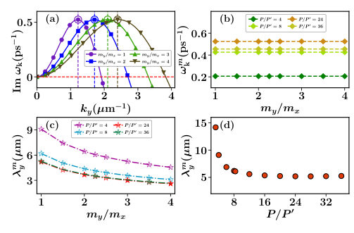
<figcaption class="paper-figure-caption"><b>Fig 1.</b> FIG. 1. (a) Imaginary part of the selected Bogoliubov spec- trum, Im ωk, which has both positive and negative values, at pump power P = 24P ′ with different mass ratio my/mx. The circular markers in (a) mark the analytically calculated point (km y , ωm k ), while the dashed vertical lines indicate the corresponding values extracted numerically from Figs. 2(b1)- 2(b2). (b) Variation of ωm k = Max(Im ωk) with mass ratio at different pump strengths. (c) Variation of the most unsta- ble wavelength λm y with mass ratio my/mx at different pump power P. The filled star markers ( ) denote the most unsta- ble wavelength λm y for mass ratio my/mx = 1, 2, 3, and 4. (d) shows the change in λm y with...</figcaption>
</figure>
<figure class="paper-figure-card">
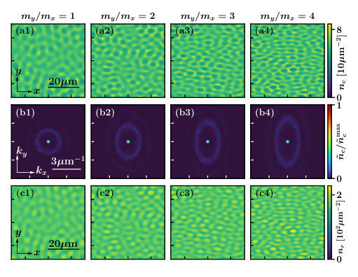
<figcaption class="paper-figure-caption"><b>Fig 2.</b> FIG. 2. Pattern formation due to modulational instabil- ity. The upper panel [(a1)-(a4)] shows the modulated con- densate density nc(r, t) = |ψc(r, t)|2 for different my/mx at t = 20.5 ps, while the middle panel [(b1)-(b4)] shows the corresponding momentum-space density ˜nc(k, t). The lower panel [(c1)-(c4)] shows the reservoir densities nr(r, t) for same values of my/mx. Simulation parameters are the same as in Fig. 1.</figcaption>
</figure>
<figure class="paper-figure-card">
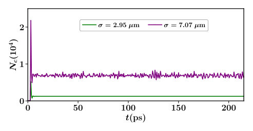
<figcaption class="paper-figure-caption"><b>Fig 3.</b> FIG. 4. Time evolution of the condensate particle number Nc = R dr |ψc(r, t)|2 for beam widths σ = 2.95 µm and σ = 7.07 µm with mass ratio my/mx = 1 .</figcaption>
</figure>
<figure class="paper-figure-card">
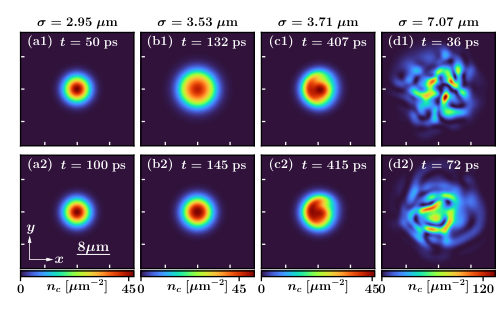
<figcaption class="paper-figure-caption"><b>Fig 4.</b> FIG. 3. Time evolution of non-resonantly pumped polari- ton condensates under Gaussian pumping with different beam widths σ and mass ratio my/mx = 1. (a1) and (a2) show sta- ble Gaussian shaped condensate for beam width σ = 2.95 µm at two different time instants. (b1) and (b2) display a breath- ing Gaussian shaped condensate for beam width σ = 3.53 µm. (c1) and (c2) are self-rotating condensates at two different time instants for beam width σ = 3.71 µm. (d1) and (d2) correspond to a modulationally unstable condensate exhibit- ing pattern formation for beam width σ = 7.07 µm. Other parameters are identical to those used in Fig. 1.</figcaption>
</figure>
<figure class="paper-figure-card">
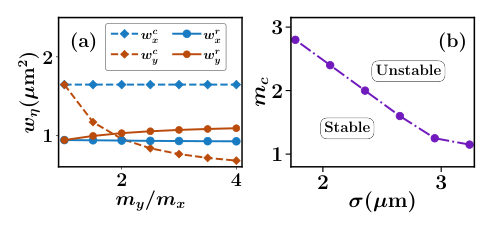
<figcaption class="paper-figure-caption"><b>Fig 5.</b> FIG. 6. (a) Condensate and reservoir mean-square widths wc(r) x and wc(r) y , after the system reaches the stationary state, as a function of mass ratios my/mx for beam width σ = 1.18 µm. (b) Variation of critical mass ratio mc with beam width σ, above which the condensate becomes unsta- ble. Other parameters are the same as in Fig. 1.</figcaption>
</figure>
</div>

<p><strong>Summary.</strong> This paper explores how tuning the mass anisotropy in polariton condensates controls their pattern formation and stability. By analyzing the system's linear excitations, the authors show that unequal effective masses induce stable, directionally preferred stripe patterns. This establishes mass anisotropy as a powerful control knob for directional instability in these non-equilibrium quantum systems.</p>
<p><strong>Why it may be interesting.</strong> This work directly addresses non-equilibrium many-body dynamics in an optical cavity setting, providing a clear mechanism (mass anisotropy) to control pattern selection and directional instabilities, which is highly relevant to quantum optics and open quantum systems.</p>
<details>
<summary>Detailed structure</summary>
<p><strong>Main problem.</strong> The study investigates how mass anisotropy affects modulational instability, pattern formation, and collective dynamics in driven-dissipative polariton condensates.</p>
<p><strong>Main result.</strong> Mass anisotropy is identified as a key control parameter, inducing stripe patterns along the direction of the greater effective mass, which is a directional effect absent in isotropic systems.</p>
<p><strong>Method.</strong> The analysis employs linear stability analysis using the Bogoliubov-de Gennes approximation on the open-dissipative Gross-Pitaevskii equation.</p>
<p><strong>Model / system.</strong> The system is an exciton-polariton condensate, modeled as a driven-dissipative system with an effective mass that can be tuned to exhibit anisotropy.</p>
<p><strong>Key observables.</strong> Stripe pattern formation, center-of-mass oscillations, most unstable wavelength ($\lambda_m$), and the imaginary part of the Bogoliubov spectrum ($ ext{Im } \omega_k$).</p>
<p><strong>Important parameters / regimes.</strong> Mass anisotropy ratio ($m_y/m_x$), pump power ($P$), and pump width ($\sigma$).</p>
<p><strong>Assumptions / limitations.</strong> The analysis relies on a small perturbation approximation around the steady state and uses a mean-field description.</p>
<p><strong>Figures summary.</strong> Figures illustrate the Bogoliubov spectrum showing instability regions, and time evolution plots demonstrate the formation of anisotropic stripe patterns and oscillations.</p>
<p><strong>Paper structure.</strong> The paper proceeds by establishing the governing equations and performing linear stability analysis to determine instability criteria, followed by numerical simulations to observe pattern formation and directional dynamics.</p>
</details>
<details>
<summary>Abstract</summary>
<p>Motivated by recent experimental advances toward electrical control of the effective mass and the realization of anisotropic mass distributions, we investigate the impact of mass anisotropy on driven-dissipative polariton condensates, focusing on modulational instability, pattern formation, and the collective dynamics of the emergent patterns. We show that unequal effective masses along the two orthogonal directions induce stripe pattern formation in an exciton-polariton condensate pumped by a non-resonant Gaussian laser beam above a critical mass ratio. A Bogoliubov analysis of the homogeneously pumped system reveals that mass anisotropy leaves the modulational-instability criteria unchanged but reshapes the unstable-mode dispersion by reducing the most unstable wave- length along the direction of larger effective mass with increasing mass ratio. This introduces an anisotropy-controlled length scale for pattern selection. When the pump width becomes comparable to the most unstable wavelength, the condensate becomes modulationally unstable and develops stripe patterns along the direction of larger effective mass, accompanied by particle-number fluctua- tions and center-of-mass oscillations along the same direction. As the pump width increases further, the stripes become distorted and develop spatial irregularities during the time evolution, indicative of modulational instability. Nevertheless, the anisotropic mass distribution preserves a pronounced directional preference, in contrast to the fully disordered patterns observed in the isotropic-mass case. Our results identify mass anisotropy as a key control parameter for directional modulational instability and pattern formation in nonequilibrium polariton condensates.</p>
</details>
<p><sub><a href="#top">↑ back to top</a></sub></p>

<p><a id="paper-2608.25415"></a></p>
<h3 id="quantum-skyrmion-parallelism-via-metasurface-tailored-high-dimensional-entanglement"><a href="http://arxiv.org/abs/2608.25415v1">Quantum skyrmion parallelism via metasurface-tailored high-dimensional entanglement</a></h3>
<p><strong>Authors:</strong> Pedro Ornelas, Ramona Bedford, Fazilah Nothlawala, Chi Li, Haoyi Yu, Isaac Nape, Stefan A. Maier, Haoran Ren, Andrew Forbes<br>
<strong>Type:</strong> experiment · <strong>Category:</strong> quantum information and computing · <strong>PDF:</strong> <a href="https://arxiv.org/pdf/2608.25415v1">https://arxiv.org/pdf/2608.25415v1</a><br>
<strong>Analysis basis:</strong> full PDF text, analyzed in chunks
<strong>Topic relevance:</strong> 🔥 <code>quantum optics experiment</code> <strong>4/5</strong> · <code>QC/QI experiment</code> <strong>3/5</strong> · <code>analog quantum simulation</code> <strong>3/5</strong> · <code>interference shaping light</code> <strong>3/5</strong> · <code>correlated / nonlocal dissipation</code> <strong>1/5</strong> · <code>driven-dissipative phase transition</code> <strong>1/5</strong> · <code>methods for driven-dissipative</code> <strong>1/5</strong> · <code>quantum measurements</code> <strong>1/5</strong></p>
<div class="figure-strip-hint">↔ Scroll figures horizontally</div>
<div class="paper-figures-scroll">
<figure class="paper-figure-card">
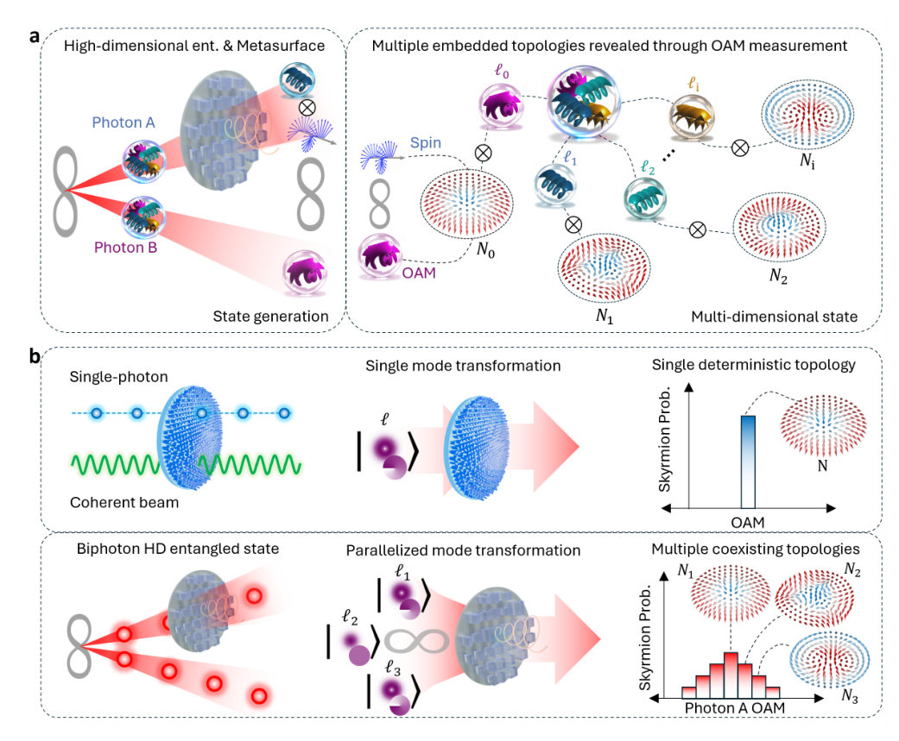
<figcaption class="paper-figure-caption"><b>Fig 1.</b> FIG. 1. Multi-channel quantum topology generated from metasurface and high-dimensional entangled OAM state. a By interfacing high-dimensional biphoton entanglement with a metasurface, multi-dimensional states are generated with several embedded topologies, derived from the joint correlations of the polarization of photon A and OAM of photon B, and only revealed through OAM measurements on photon A. b Single photons and coherent beams incident on a metasurface yield single mode transformations with a single deterministic topological structure. In contrast, biphoton high-dimensional (HD) entangled states incident on a metasurface allows for multiple mode transformations occurring in parallel,...</figcaption>
</figure>
<figure class="paper-figure-card">
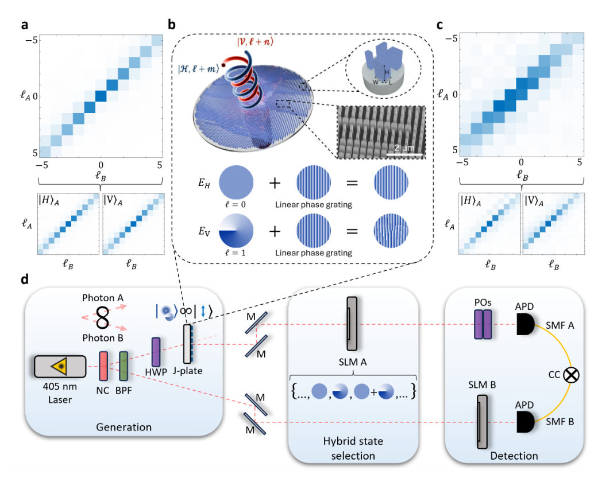
<figcaption class="paper-figure-caption"><b>Fig 2.</b> FIG. 2. Metasurface design and characterization. a, OAM spiral bandwidth depicting the nature of the high-dimensional state correlations produced directly after the SPDC process (after having passed through the half-wave plate (HWP)). b, Schematic of the metasurface generating spatially overlapped beams with independent phase control in decoupled polarization channels. Insets show the unit-cell geometry, consisting of amorphous silicon (a-Si) cuboid nanopillars. The lower panel illustrates the azimuthal OAM phase profiles with an additional linear phase gradient encoded for both channels. c, Shifted OAM spiral bandwidth measured after passing the OAM-OAM entangled state through the J-plate...</figcaption>
</figure>
<figure class="paper-figure-card">
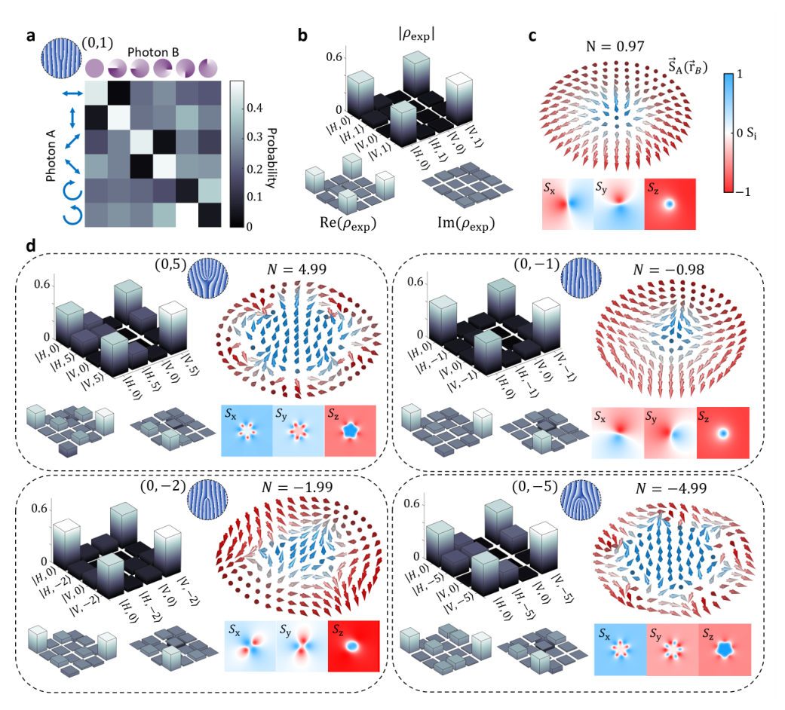
<figcaption class="paper-figure-caption"><b>Fig 3.</b> FIG. 3. Various Metasurface assisted topologies. a, Measured quantum state tomography and b, reconstructed absolute, real and imaginary components of the density matrix for the state, |H⟩A|0⟩B + |V ⟩A|1⟩B, along with its c, quantum Stokes parameters, {Sx, Sy, Sz}, and quantum Stokes vector ⃗S(⃗rB)A created using the metasurface with (m, n) = (0, 1). d, corre- sponding density matrix components, quantum Stokes components and Quantum Stokes vector field for states produced using metasurfaces with (m, n) = (0, 5), (0, −1), (0, −2) and (0, −5).</figcaption>
</figure>
<figure class="paper-figure-card">
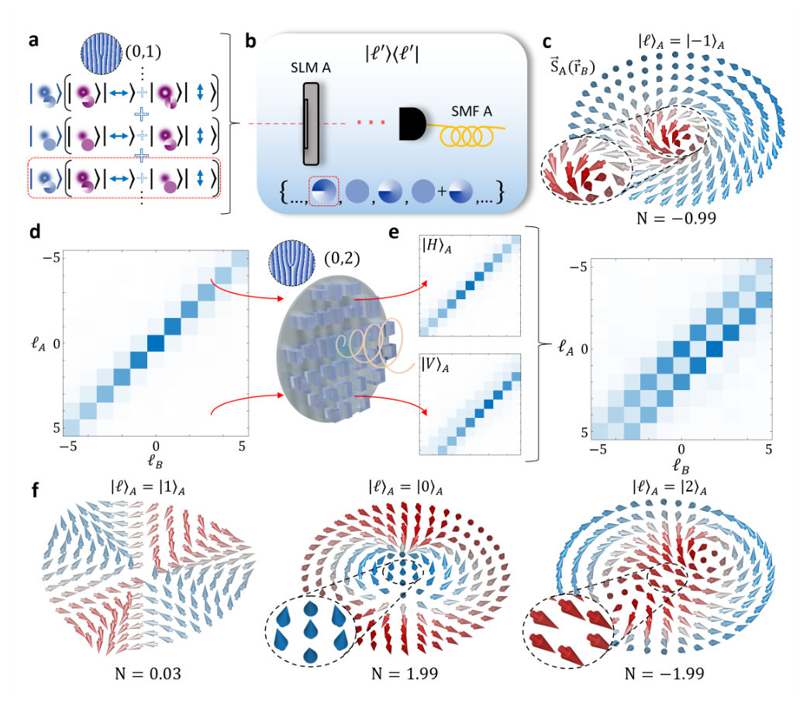
<figcaption class="paper-figure-caption"><b>Fig 4.</b> FIG. 4. Multi-Skyrmion state. a Example of multi-dimensional hybrid entangled state after passing high-dimensional OAM-OAM entangled state through J-plate metasurface with (m, n) = (0, 1). b, Projection of a particular hybrid state is done by displaying the conjugate OAM of photon A on SLM A and passing that photon through a SMF. For example, selection of the c OAM state |−1⟩A, collapses the system to a hybrid state possessing a flipped polarity and Skyrmion number when compared to the selection of |0⟩A. d, OAM spiral bandwidth of initial high-dimensional state. e, OAM spiral bandwidth of multi-dimensional state showing horizontal, |H⟩A, and vertical, |V ⟩A, polarized components that...</figcaption>
</figure>
<figure class="paper-figure-card">
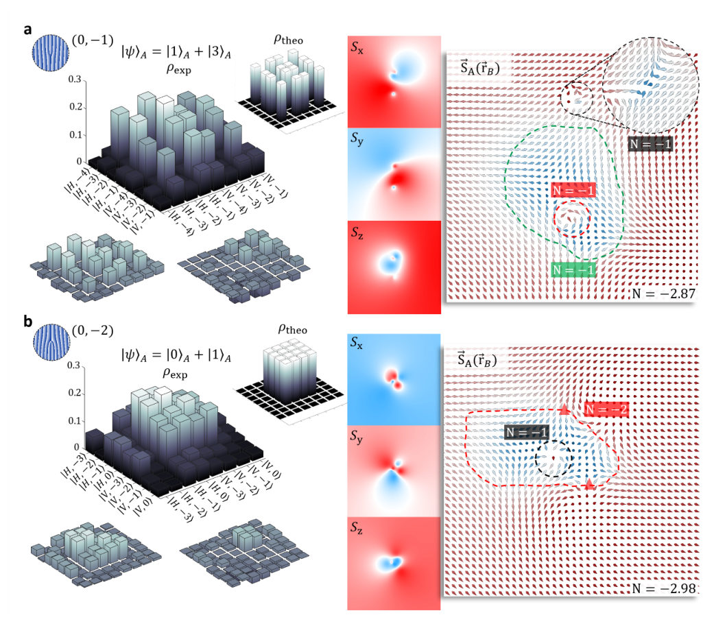
<figcaption class="paper-figure-caption"><b>Fig 5.</b> FIG. 5. Complex hybrid states possessing topological structures. Measured density matrices, quantum Stokes compo- nents and Stokes vector fields for hybrid states generated by projecting onto superposition OAM states, a |ℓ⟩A = |1⟩A + |3⟩A and b, |ℓ⟩A = |0⟩A + |1⟩A for states generated by metasurfaces with (m, n) = (0, −1) and (m, n) = (0, −2), respectively. Topological features are highlighted by different coloured regions with highlighted topological numbers representing empirical numbers associated with each ”local” topological feature. Calculated topological number of the full field is given in the inset at the bottom right of each vector field.</figcaption>
</figure>
</div>

<p><strong>Summary.</strong> This paper presents a novel method to generate multiple, distinct quantum skyrmion topologies simultaneously from a single metasurface device. By coupling high-dimensional photonic entanglement (OAM-OAM pairs) to a structured metasurface, the authors overcome the limitation of single-topology generation. This establishes a new, compact pathway for engineering complex quantum states for quantum information applications.</p>
<p><strong>Why it may be interesting.</strong> This work directly addresses the generation and control of complex topological quantum states using structured light and engineered matter, which is highly relevant to quantum optics and photonic quantum information processing.</p>
<details>
<summary>Detailed structure</summary>
<p><strong>Main problem.</strong> Existing methods for generating quantum skyrmions are limited to producing pre-determined two-dimensional qubit states with a single topology.</p>
<p><strong>Main result.</strong> The authors demonstrated the compact generation of multiple, distinct topological quantum states from a single metasurface device by interfacing it with high-dimensional photonic entanglement.</p>
<p><strong>Method.</strong> The approach uses a metasurface to induce a non-local, probabilistic topological transformation on a high-dimensional OAM-OAM entangled photonic state.</p>
<p><strong>Model / system.</strong> The system utilizes quantum skyrmions realized in optical platforms, specifically employing biphoton entanglement generated via SPDC and interacting with a metasurface (J-plate) designed with amorphous silicon nanopillars.</p>
<p><strong>Key observables.</strong> Topological winding number (N), Concurrence (C), Purity ($\gamma$), and Fidelity (F) are used to characterize the generated states and their entanglement.</p>
<p><strong>Important parameters / regimes.</strong> The topological control is achieved by varying parameters $(m, n)$ related to the metasurface transformation, yielding multiple distinct topological classes.</p>
<p><strong>Assumptions / limitations.</strong> The analysis relies on the ability to characterize the joint state correlation structure and the assumption that the metasurface interaction can be modeled to induce controlled topological shifts.</p>
<p><strong>Figures summary.</strong> Figures compare the proposed scheme (biphoton HD entanglement $
ightarrow$ multiple topologies) against single-photon methods, and show the metasurface design and resulting shifted OAM spiral bandwidth.</p>
<p><strong>Paper structure.</strong> The paper progresses from identifying the limitation of single-topology generation to proposing the metasurface-entanglement interface, detailing the physical implementation using OAM-OAM entangled pairs, and finally quantifying the resulting multi-topological states using various quantum metrics.</p>
</details>
<details>
<summary>Abstract</summary>
<p>Quantum skyrmions are topological structures that have garnered significant interest due to their demonstrated robustness and versatility across diverse optical platforms. However, existing approaches for their generation are limited to producing pre-determined two dimensional qubit states with a single topology. Here we create multi-dimensional topological states by introducing a non-local interaction between high-dimensional photonic entanglement and a metasurface, where the topological transformation induced by the metasurface is made non-deterministic by the probabilistic nature of the interfacing entangled state. Within this framework, we demonstrate that individual quantum states can host multiple co-existing topologies that are only revealed upon measurement, allowing for their parallel transport within distinct spatial mode channels. We confirm this by revealing the rich topological landscape within our modified Hilbert space while controlling the desired output topology by orbital angular momentum (OAM) projections on one of the entangled photons, producing multiple non-local polarization-OAM entangled states characterized by distinct topological classes, all from a single metasurface device. Our results reveal new capability when structured high-dimensional entanglement is interfaced with structured matter capable of coupling photonic degrees of freedom, establishing a new pathway for the compact generation of complex quantum states.</p>
</details>
<p><sub><a href="#top">↑ back to top</a></sub></p>

<p><a id="paper-2608.25207"></a></p>
<h3 id="finite-relaxation-protocols-with-minimal-dissipation"><a href="http://arxiv.org/abs/2608.25207v1">Finite relaxation protocols with minimal dissipation</a></h3>
<p><strong>Authors:</strong> Ben Ansbacher, Harrison Hartle, Abhishek Yadav, Jan Korbel, David H. Wolpert<br>
<strong>Type:</strong> theory · <strong>Category:</strong> statistical mechanics · <strong>PDF:</strong> <a href="https://arxiv.org/pdf/2608.25207v1">https://arxiv.org/pdf/2608.25207v1</a><br>
<strong>Analysis basis:</strong> full PDF text, analyzed in chunks
<strong>Topic relevance:</strong> 🔥 <code>non-equilibrium universality</code> <strong>4/5</strong> · <code>driven-dissipative phase transition</code> <strong>3/5</strong> · <code>Keldysh / 2PI / non-Gaussian methods</code> <strong>2/5</strong> · <code>correlated / nonlocal dissipation</code> <strong>2/5</strong> · <code>methods for driven-dissipative</code> <strong>2/5</strong> · <code>quantum measurements</code> <strong>2/5</strong> · <code>analog quantum simulation</code> <strong>1/5</strong></p>
<div class="figure-strip-hint">↔ Scroll figures horizontally</div>
<div class="paper-figures-scroll">
<figure class="paper-figure-card">
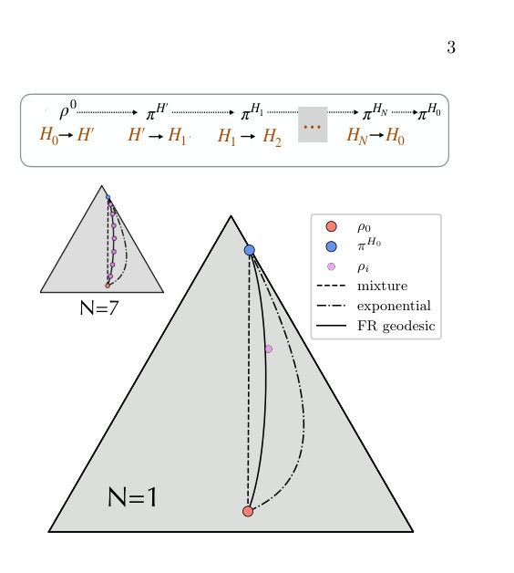
<figcaption class="paper-figure-caption"><b>Fig 1.</b> FIG. 1. Top: Schematic of quench and relax protocol us- ing finite many Hamiltonians. Bottom: Plot on 2-simplex of the optimal intermediary ρi (magenta) given by (5). The ini- tial distribution is ρ0 and the final distribution is πβ. ρi is relatively close to the the Fisher-Rao geodesic, but not ex- actly on it. Moreover, ρi does not fall on the linear mixture interpolation (1−t)ρ0(x)+tπβ(x) or the exponential interpo- lation ρ0(x)t(πβ(x))1−t/Z(t) [23]. Inset: Optimal intermedi- aries for N = 7. The optimal intermediary distributions ρi for i = 1, ..., 7 satisfy (5). We can see the optimal intermediary distributions converge to the FR geodesic for large N.</figcaption>
</figure>
<figure class="paper-figure-card">
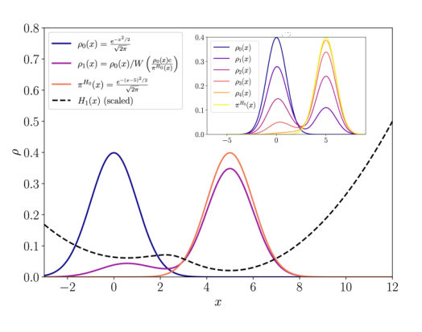
<figcaption class="paper-figure-caption"><b>Fig 2.</b> FIG. 3. Optimal intermediary ρ(x) for N = 1 with quadratic Hamiltonians at β = 1, for initial and final distributions ρ0(x) = e−1</figcaption>
</figure>
<figure class="paper-figure-card">
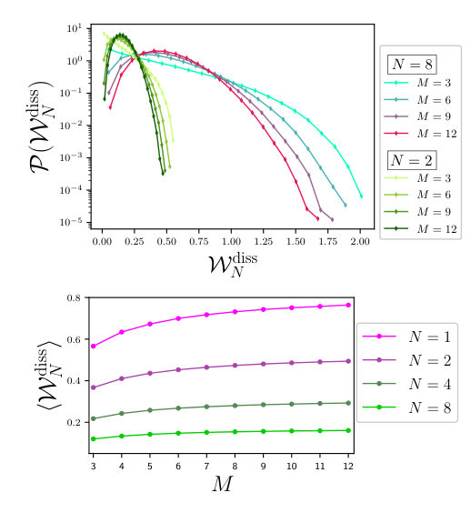
<figcaption class="paper-figure-caption"><b>Fig 3.</b> FIG. 2. Minimal dissipated work Wdiss N (Eq. (7)) from 9×105</figcaption>
</figure>
<figure class="paper-figure-card">
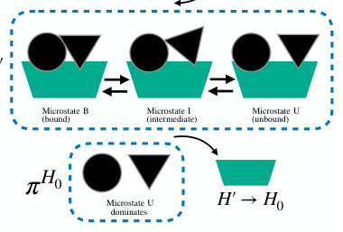
<figcaption class="paper-figure-caption"><b>Fig 4.</b> FIG. 4. Schemtic of an enzyme-catalyzed reaction as modeled in Sec. IV B. Before the enzyme arrives, the substrate is in a meta-stable distribution, ρ0, dominated by the microstate B (bound) representing the substrate before reaction. The enzyme arrives and attaches by van der Waals forces, corre- sponding to an effective quench H0 →H′. In the presence of the enzyme, the system relaxes to the equilibrium associated with H′. The enzyme eventually disconnects due to ther- mal fluctuations, corresponding to a second effective quench, H′ →H0. The system finally relaxes to the equilibrium of the original Hamiltonian, πH0, which is dominated by microstate U (unbound).</figcaption>
</figure>
<figure class="paper-figure-card">
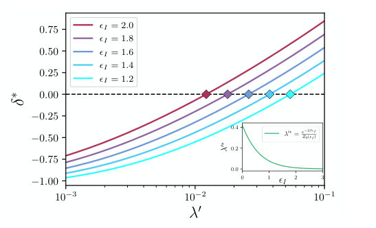
<figcaption class="paper-figure-caption"><b>Fig 5.</b> FIG. 5. Optimal change in barrier height ϵI →ϵI −δ as a function of the weight towards time-minimization λ′ in the composite cost function C(δ) at β = 1, ϵB = 1, ϵU = 0. For λ′ &gt; λ′∗, the solution δ∗is positive; diamonds display (λ′, δ) = (λ′∗, 0) at each value of ϵI considered. Inset: decay of λ′∗as a function of barrier height ϵI; for larger initial barriers, less weight towards time-minimization is required to achieve barrier-lowering.</figcaption>
</figure>
</div>

<p><strong>Summary.</strong> This work develops a theory for minimizing energy dissipation when extracting work from non-equilibrium systems using a finite sequence of controlled quenches. By relating the optimal protocols to the Fisher-Rao geodesic, the authors establish quantitative lower bounds on the maximum extractable work. The framework is successfully applied to model complex physical processes, including optical trapping and enzyme kinetics.</p>
<p><strong>Why it may be interesting.</strong> It provides rigorous, quantitative bounds on non-equilibrium work extraction, connecting fundamental thermodynamic concepts (dissipation) to geometric measures (Fisher-Rao distance) in a discrete, step-wise manner.</p>
<details>
<summary>Detailed structure</summary>
<p><strong>Main problem.</strong> The paper determines the optimal sequence of intermediary Hamiltonians for work extraction from non-equilibrium systems when restricted to a finite number of quench-relax steps, aiming to minimize dissipated work.</p>
<p><strong>Main result.</strong> The minimal dissipated work scales asymptotically as the square of the Fisher-Rao distance divided by $2eta N$, and a lower bound on extracted work is derived based on this distance.</p>
<p><strong>Method.</strong> The problem is formulated as minimizing a sum of Kullback-Leibler divergences over a sequence of quenches, leading to optimal intermediaries defined by a recurrence relation involving the Lambert W function.</p>
<p><strong>Model / system.</strong> The analysis covers general non-equilibrium systems, extending to specific models like optical traps (1D Gaussian distributions) and enzyme-catalyzed reactions (3-state Markov chains).</p>
<p><strong>Key observables.</strong> Dissipated work ($W_{	ext{diss}}$), extracted work ($W_{	ext{ext}}$), and the Fisher-Rao distance ($d_{	ext{FR}}$).</p>
<p><strong>Important parameters / regimes.</strong> The number of steps ($N$), inverse temperature ($eta$), and the coupling/rate parameters ($\delta, \epsilon$) in the applied models.</p>
<p><strong>Assumptions / limitations.</strong> The primary assumption is the restriction to a finite number ($N$) of quench-relax steps, and in applications, assumptions about timescales (e.g., separation of timescales in catalysis) are made.</p>
<p><strong>Figures summary.</strong> Figures illustrate optimal intermediary distributions (sometimes bimodal) compared to geodesics, show the scaling of mean dissipated work with $N$, and schematically depict the enzyme-catalyzed reaction process.</p>
<p><strong>Paper structure.</strong> The paper builds from the general theory of finite relaxation protocols minimizing KL divergence sums, deriving the optimal intermediary form using the Lambert W function, and then applying this framework to concrete examples like optical traps and enzyme catalysis.</p>
</details>
<details>
<summary>Abstract</summary>
<p>Work extraction from nonequilibrium systems is a major challenge across biological, chemical, physical, and engineering systems. Idealized protocols generally require a quasistatic relaxation stage in which the Hamiltonian is gradually adjusted through a continuum of intermediaries. Here, we consider protocols restricted to a finite number $N$ of intermediary Hamiltonians, consisting of a sequence of quench-relax steps. We determine the sequence of quenches that minimizes the dissipated work, which can be expressed in terms of a recurrence involving the Lambert function. The optimal sequence converges to the Fisher-Rao geodesic, saturating known leading-order dissipation bounds at large $N$. We obtain lower bounds on work extraction from a nonequilibrium distribution as a function of its Fisher-Rao distance to equilibrium. We extend and apply the framework in two simple models: (i) an optical trap experiment, showing that the optimal intermediary distribution can be bimodal even for unimodal initial and final distributions, and (ii) an enzyme-catalyzed reaction, showing that that accounting for relaxation time in addition to dissipation can favor barrier-lowering.</p>
</details>
<p><sub><a href="#top">↑ back to top</a></sub></p>

<p><a id="paper-2608.25649"></a></p>
<h3 id="quantum-motility-induced-phase-separation"><a href="http://arxiv.org/abs/2608.25649v1">Quantum motility-induced phase separation</a></h3>
<p><strong>Authors:</strong> Laurin Brunner, Ricard Alert, Reyhaneh Khasseh, Markus Heyl<br>
<strong>Type:</strong> theory · <strong>Category:</strong> statistical mechanics · <strong>PDF:</strong> <a href="https://arxiv.org/pdf/2608.25649v1">https://arxiv.org/pdf/2608.25649v1</a><br>
<strong>Analysis basis:</strong> full PDF text, analyzed in chunks
<strong>Topic relevance:</strong> 🔥 <code>methods for driven-dissipative</code> <strong>4/5</strong> · <code>driven-dissipative phase transition</code> <strong>3/5</strong> · <code>non-equilibrium universality</code> <strong>3/5</strong> · <code>Keldysh / 2PI / non-Gaussian methods</code> <strong>2/5</strong> · <code>analog quantum simulation</code> <strong>1/5</strong> · <code>correlated / nonlocal dissipation</code> <strong>1/5</strong> · <code>quantum measurements</code> <strong>1/5</strong></p>
<div class="figure-strip-hint">↔ Scroll figures horizontally</div>
<div class="paper-figures-scroll">
<figure class="paper-figure-card">
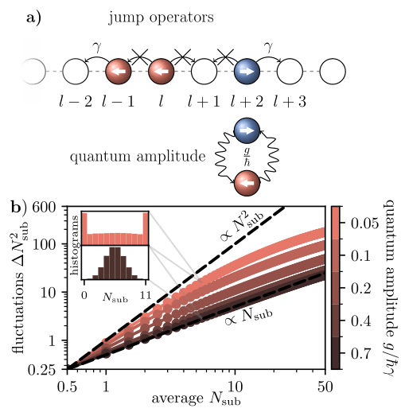
<figcaption class="paper-figure-caption"><b>Fig 1.</b> FIG. 1. a) Schematic of dynamic processes in the minimal model. Particles jump only in the direction of their inter- nal spin (no left jumps for →particles, and vice versa) and only if the target site is empty. The jump from l to l −1 is blocked since l −1 is occupied. b) Giant number fluctuations for different subsystem sizes. Total system size L = 1000, Ntraj = 5 · 104 independent trajectories, one spatial configu- ration sampled per trajectory. Insets show histograms of Nsub for Lsub = 11. The exponent for g/ℏγ = 0.05 is β ≈1.7.</figcaption>
</figure>
<figure class="paper-figure-card">
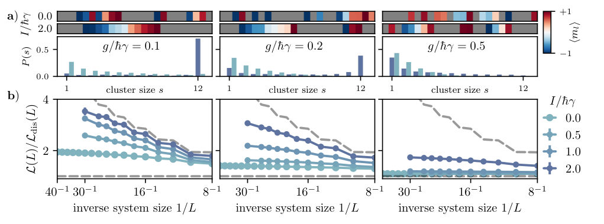
<figcaption class="paper-figure-caption"><b>Fig 2.</b> FIG. 2. a) State of a representative trajectory of the steady-state for the minimal model (top) and the extended model with I/ℏγ = 2 (bottom), both for system size L = 24. The colors indicate the local spin magnetization ⟨ml⟩= ⟨nl←−nl→⟩, where the expectation value is taken over the trajectory’s spin degree of freedom. Below are histograms of cluster sizes s, defined as the number of consecutive occupied sites. The colors correspond to the interaction strength in b) for I/ℏγ = 0.0, 2.0. At g/ℏγ = 0.1, the extended model exhibits a single large cluster, while the minimal model still shows multiple smaller clusters. For larger quantum amplitudes the cluster size distribution of both models...</figcaption>
</figure>
<figure class="paper-figure-card">
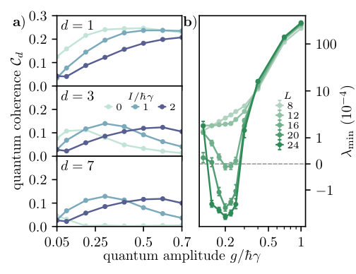
<figcaption class="paper-figure-caption"><b>Fig 3.</b> FIG. 3. a) Quantum coherence Cd for L = 20 as a function of quantum amplitude g/ℏγ for subsystem distances d = 1, 3, 7 (vertical panels) and interaction strengths I/ℏγ = 0, 1, 2 (curves, light to dark). For the minimal model, the coherence for weak quantum amplitudes remains finite even at large distances d, whereas it decays rapidly for strong quantum amplitudes. For the extended model, the coherence gener- ally remains finite even at large distances for a broad range of quantum amplitudes, although slightly suppressed when com- pared to the minimal model. b) Smallest eigenvalue λmin of the partial transpose of the nearest-neighbor reduced density matrix for I/ℏγ = 2. Computed from Ntraj =...</figcaption>
</figure>
<figure class="paper-figure-card">
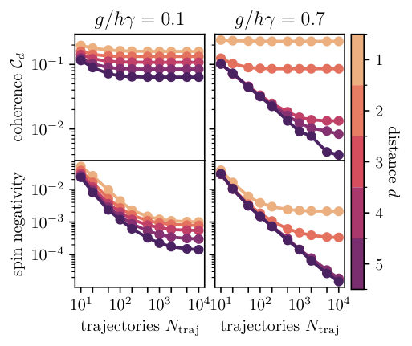
<figcaption class="paper-figure-caption"><b>Fig 4.</b> FIG. 4. Top row: Convergence of quantum coherence (6) of the reduced density matrix ρd for L = 20 at I = 0. Bot- tom row: Convergence of spin negativity. For larger quantum amplitudes g/ℏγ and distances d convergence cannot yet be observed for the Ntraj = 104 trajectories. In this case, we use the value at Ntraj = 104 as an upper bound estimate for the quantum coherence.</figcaption>
</figure>
</div>

<p><strong>Summary.</strong> This paper theoretically investigates quantum Motility-Induced Phase Separation (MIPS) in a model of active hard-core bosons. By incorporating nearest-neighbor repulsive interactions, the authors show that the system can achieve genuine phase separation while simultaneously maintaining long-distance quantum coherence. This establishes quantum MIPS as a novel, non-equilibrium quantum state driven by the interplay between activity and quantum mechanics.</p>
<p><strong>Why it may be interesting.</strong> This work directly tackles the intersection of non-equilibrium statistical mechanics (active matter) and quantum physics, providing a theoretical framework for understanding how quantum coherence can stabilize novel, non-classical steady states.</p>
<details>
<summary>Detailed structure</summary>
<p><strong>Main problem.</strong> The paper investigates the existence and nature of quantum Motility-Induced Phase Separation (MIPS), specifically addressing how quantum coherence interacts with dissipative self-propulsion in active matter.</p>
<p><strong>Main result.</strong> The authors provide evidence that quantum MIPS can occur in a model of active hard-core bosons, establishing it as a genuinely non-equilibrium quantum state distinct from classical MIPS.</p>
<p><strong>Method.</strong> The study employs theoretical modeling using a Lindblad master equation and numerical simulations, including the Monte Carlo Wave-Function (MCWF) method, to track quantum dynamics.</p>
<p><strong>Model / system.</strong> The system is a one-dimensional chain of hard-core bosons with an internal spin degree of freedom, evolving under a combination of coherent Hamiltonian dynamics (tumble) and dissipative jumps (directed hopping/run).</p>
<p><strong>Key observables.</strong> Superlinear number fluctuations ($\Delta N^2_{	ext{sub}} \propto N^2_{	ext{sub}}$), characteristic length scale ($L$) derived from the structure factor, quantum coherence ($C_d$), and spatial entanglement (Negativity).</p>
<p><strong>Important parameters / regimes.</strong> The ratio of coupling strengths ($g/\hbar\gamma$) and the strength of nearest-neighbor repulsive interactions ($I$).</p>
<p><strong>Assumptions / limitations.</strong> The analysis relies on the MCWF method and assumes that the breakdown of factorization in the extended model is necessary to stabilize macroscopic phase separation.</p>
<p><strong>Figures summary.</strong> Figures illustrate superlinear number fluctuations, the growth of the characteristic length scale $L$ upon adding repulsion, and the convergence of quantum coherence and spin negativity in the steady state.</p>
<p><strong>Paper structure.</strong> The paper progresses by first analyzing a minimal model showing microphase separation, then extending the model with nearest-neighbor repulsion to achieve genuine phase separation, and finally confirming the quantum nature by demonstrating persistent long-distance quantum coherence and entanglement in the clustered steady states.</p>
</details>
<details>
<summary>Abstract</summary>
<p>Motility-induced phase separation (MIPS) describes a central clustering phenomenon in active matter systems where particles spontaneously separate into dense and dilute phases even in the absence of interparticle attractive forces. Recent theoretical and experimental efforts have taken the first steps to extend active matter concepts to the quantum level. However, whether a genuine quantum analog of MIPS exists and how quantum coherence would compete or cooperate with the dissipative self-propulsion has remained open so far. Here, we provide evidence that quantum MIPS can occur in a model of active hard-core bosons in one dimension. Our model yields superlinear number fluctuations characteristic of MIPS, leading to microphase separation with large but finite cluster size. Adding nearest-neighbor repulsive interactions, we find numerical evidence for restoring genuine phase separation with a divergent correlation length. Crucially, the clustered steady states maintain a long-distance quantum coherence, revealing a genuinely quantum feature with no classical counterpart. These results provide a foundation for exploring quantum MIPS and suggest that the coherence-activity interplay can generate new types of nonequilibrium quantum states.</p>
</details>
<p><sub><a href="#top">↑ back to top</a></sub></p>

<p><a id="paper-2608.25742"></a></p>
<h3 id="the-geometric-phase-as-a-diagnostic-for-driven-dissipative-oscillators"><a href="http://arxiv.org/abs/2608.25742v1">The Geometric Phase as a Diagnostic for Driven-Dissipative Oscillators</a></h3>
<p><strong>Authors:</strong> Zeen Sun, Yuan Shen, Haitao Ding, Yuancheng Zhan, Leong-Chuan Kwek<br>
<strong>Type:</strong> theory · <strong>Category:</strong> other · <strong>PDF:</strong> <a href="https://arxiv.org/pdf/2608.25742v1">https://arxiv.org/pdf/2608.25742v1</a><br>
<strong>Analysis basis:</strong> full PDF text, analyzed in chunks
<strong>Topic relevance:</strong> 🔥 <code>driven-dissipative phase transition</code> <strong>4/5</strong> · <code>methods for driven-dissipative</code> <strong>3/5</strong> · <code>non-equilibrium universality</code> <strong>3/5</strong> · <code>Keldysh / 2PI / non-Gaussian methods</code> <strong>2/5</strong> · <code>Tavis-Cummings &amp; cavity-many-emitter</code> <strong>1/5</strong> · <code>correlated / nonlocal dissipation</code> <strong>1/5</strong> · <code>quantum measurements</code> <strong>1/5</strong></p>
<div class="figure-strip-hint">↔ Scroll figures horizontally</div>
<div class="paper-figures-scroll">
<figure class="paper-figure-card">
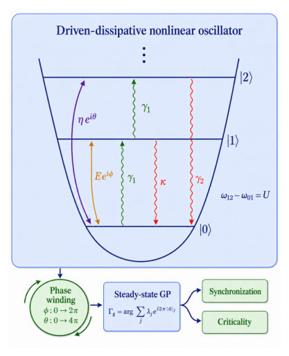
<figcaption class="paper-figure-caption"><b>Fig 1.</b> FIG. 1. Schematic of the driven-dissipative nonlinear oscil- lator (1) and phase-winding protocol used to generate the steady-state GP, which probes synchronization and critical- ity.</figcaption>
</figure>
<figure class="paper-figure-card">

<figcaption class="paper-figure-caption"><b>Fig 2.</b> FIG. 2. Perturbative GP response. γ2/γ1 = 3 and κ/γ1 = 0.1 (a) Arnold tongue in this quantum regime. (b) The GP re- sponse at zero detuning. Blue solid line indicates the numer- ical GP, while the orange dotted line is obtained by pertur- bation. The green dashed line indicates the relative change in the limit-cycle amplitude as the drive strength increases. (c)-(e) The Wigner functions at E/γ1 = 0, 0.1, and 0.2, re- spectively.</figcaption>
</figure>
<figure class="paper-figure-card">
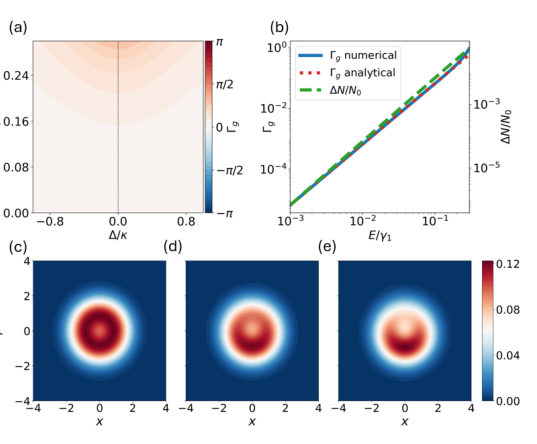
<figcaption class="paper-figure-caption"><b>Fig 3.</b> Fig. 2(a) shows that the GP forms an Arnold-tongue- like response in the detuning–drive plane, reflecting the resonantly enhanced phase-locking response of the limit cycle, similar to the phase coherence. To check that the system remains in the perturbative regime, we monitor the relative amplitude deformation, ∆N/N0 = (⟨a†a⟩E − ⟨a†a⟩0)/⟨a†a⟩0, where N0 = ⟨a†a⟩0. For the weak drives considered, ∆N/N0 remains small, so the drive mainly locks the phase rather than deforming the limit cycle. In the quantum regime γ1 ≤γ2, the numerical GP follows the predicted quadratic scaling for E/γ1 ≲0.2, as shown in Fig. 2(b), with ∆N/N0 ≃0.02. The quadratic behavior is valid in the strongly damped system...</figcaption>
</figure>
<figure class="paper-figure-card">
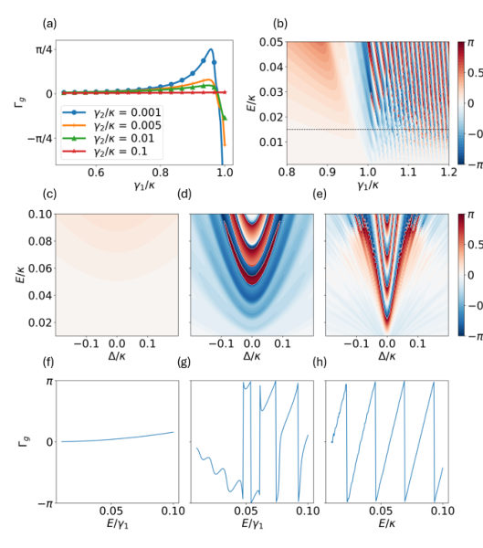
<figcaption class="paper-figure-caption"><b>Fig 4.</b> FIG. 3. (a) GP for different values of γ2/κ at the same drive strength E/κ = 0.015. Smaller nonlinear damping produces a sharper change in the GP near the critical point. (b) GP diagram at γ2/κ = 0.005 and ∆= 0. The black dotted line denotes the orange curve from (a). (c)-(e) GP as a function of E/κ and ∆/κ at fixed γ1/κ = 0.6, 1, 1.4, respectively. (f) - (h) Zero-detuning cross sections for γ1/κ = 0.6, 1, 1.4</figcaption>
</figure>
<figure class="paper-figure-card">
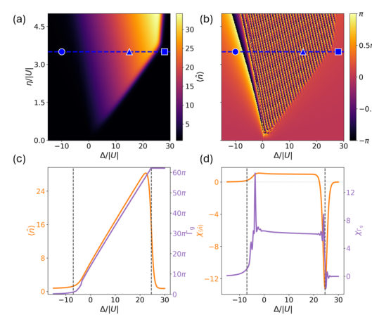
<figcaption class="paper-figure-caption"><b>Fig 5.</b> FIG. 4. Geometric response of the squeezing-driven Kerr res- onator for U &lt; 0 and γ1 = γ2 = κ = 0.1|U|. (a) Steady-state photon number ⟨ˆn⟩as a function of the rescaled squeezing strength η/|U| and detuning x = ∆/|U|. The dotted line marks the cut at η/|U| = 3.5. The circle, triangle, and square indicate representative low-detuning vacuum-like, bright, and high-detuning vacuum-like states, respectively. (b) GP for the same parameters. (c) Cross sections of ⟨ˆn⟩and Γg/π at η/|U| = 3.5. The GP is unwrapped only as a visual guide. The vertical dashed lines mark the independently iden- tified second- and first-order boundaries. (d) Local responses χ⟨n⟩= ∂x⟨ˆn⟩and χΓg = ∂xΓg. The left and right...</figcaption>
</figure>
</div>

<p><strong>Summary.</strong> This work introduces the geometric phase as a universal diagnostic tool for understanding steady-state reorganization in driven-dissipative quantum oscillators. By analyzing the phase winding protocol, the authors show that the GP captures critical phenomena like phase locking and dissipative phase transitions. This method is highly valuable because it probes the entire eigensystem structure, offering a more comprehensive view than traditional observables.</p>
<p><strong>Why it may be interesting.</strong> It provides a powerful, unified geometric tool to diagnose complex non-equilibrium dynamics in open quantum systems, moving beyond simple mean-field observables to probe the underlying structure of the steady-state eigensystem.</p>
<details>
<summary>Detailed structure</summary>
<p><strong>Main problem.</strong> The paper aims to find a unified geometric diagnostic to characterize steady-state reorganization in driven-dissipative quantum oscillators, linking phase locking and dissipative phase transitions.</p>
<p><strong>Main result.</strong> The geometric phase (GP) provides a unified, experimentally accessible diagnostic that captures the reorganization of the steady-state eigensystem across different critical regimes.</p>
<p><strong>Method.</strong> The analysis utilizes the kinematic geometric phase approach, particularly by winding the drive phase to generate a closed loop of non-equilibrium steady states, reducing the GP to an eigensystem functional.</p>
<p><strong>Model / system.</strong> The study models driven-dissipative bosonic systems, including the Quantum Stuart-Landau (QSL) oscillator and the two-photon-driven Kerr resonator, governed by a master equation.</p>
<p><strong>Key observables.</strong> Geometric Phase ($\Gamma_g$), Phase Coherence ($S_q$), and the local geometric response ($\chi_{\Gamma_g}$), which is decomposed into eigenvalue ($\chi_\lambda$) and eigenvector ($\chi_n$) contributions.</p>
<p><strong>Important parameters / regimes.</strong> Drive strengths ($E, \eta$), damping rates ($\gamma_1, \gamma_2, \kappa$), and the proximity to critical points like the Hopf threshold.</p>
<p><strong>Assumptions / limitations.</strong> The analysis relies on perturbative expansions in the weak-drive limit, and for measurement, it employs mixed-state interferometry (Ramsey sequence) to bypass full density matrix reconstruction.</p>
<p><strong>Figures summary.</strong> Figures illustrate the perturbative GP response showing Arnold-tongue behavior, the GP near the Hopf threshold showing nonperturbative reorganization, and the decomposition of the GP response across first and second-order transitions in the Kerr resonator.</p>
<p><strong>Paper structure.</strong> The paper progresses from defining the general geometric phase for nonunitary evolution, applying it to the QSL oscillator to show its connection to phase locking, and finally analyzing the Kerr resonator to decompose the response into eigenvalue and eigenvector contributions near phase transitions.</p>
</details>
<details>
<summary>Abstract</summary>
<p>Driven-dissipative quantum oscillators lock their phase, deform their limit cycles, and undergo dissipative phase transitions, yet these behaviors are read from unrelated quantities defined on the same steady-state density matrix. We show that a single geometric quantity organizes them. Winding the phase of the drive generates a closed loop of nonequilibrium steady states, and because the Liouvillian is covariant under number rotations, the kinematic mixed-state geometric phase of this loop reduces exactly to an eigensystem functional of a single steady state. Under weak driving, it is governed by the same nearest-neighbor coherences that produce phase locking and inherits the Arnold tongue of synchronization. Near the Hopf threshold, it registers the nonperturbative reorganization of the steady-state eigenvectors. And in the squeezing-driven Kerr resonator, it develops distinct signatures at the first and second order dissipative phase transitions. The geometric phase thus provides a unified and experimentally accessible characterization of steady-state reorganization.</p>
</details>
<p><sub><a href="#top">↑ back to top</a></sub></p>

<p><a id="paper-2608.26028"></a></p>
<h3 id="a-heterogeneously-integrated-coupled-cavity-frequency-beam-splitter"><a href="http://arxiv.org/abs/2608.26028v1">A heterogeneously integrated coupled-cavity frequency beam splitter</a></h3>
<p><strong>Authors:</strong> Lucas M. Cohen, Manuel H. Muñoz-Arias, Mohan Sarovar, Nicholas A. Boynton, Shawn C. Arterburn, Thomas A. Friedmann, Nils T. Otterstrom, Paul S. Davids, Michael Gehl<br>
<strong>Type:</strong> experiment · <strong>Category:</strong> quantum information and computing · <strong>PDF:</strong> <a href="https://arxiv.org/pdf/2608.26028v1">https://arxiv.org/pdf/2608.26028v1</a><br>
<strong>Analysis basis:</strong> full PDF text, analyzed in chunks
<strong>Topic relevance:</strong> 🔥 <code>QC/QI experiment</code> <strong>4/5</strong> · <code>interference shaping light</code> <strong>3/5</strong> · <code>quantum optics experiment</code> <strong>3/5</strong> · <code>analog quantum simulation</code> <strong>1/5</strong> · <code>driven-dissipative phase transition</code> <strong>1/5</strong></p>
<div class="figure-strip-hint">↔ Scroll figures horizontally</div>
<div class="paper-figures-scroll">
<figure class="paper-figure-card">

<figcaption class="paper-figure-caption"><b>Fig 1.</b> Fig. 1. Heterogeneous Si/TFLN platform fabrication. (a) Process flow performed in the CMOS foundry. (b) Post-foundry HI and microfabrication process. (c) SEM cross-section image of the fully processed platform.</figcaption>
</figure>
<figure class="paper-figure-card">

<figcaption class="paper-figure-caption"><b>Fig 2.</b> Fig. 2. CCM device design. (a) Optical microscope image of the CCM modulator. (b) Simulated overlay of the Ex component of the optical and RF fields in the EO modulation region. (c) Simulated single-arm VπL as a function of TFLN slab thickness and silicon waveguide width. (d) Estimated RF 3 dB bandwidth for a 250 nm-wide silicon waveguide with 600 nm-thick TFLN layer.</figcaption>
</figure>
<figure class="paper-figure-card">

<figcaption class="paper-figure-caption"><b>Fig 3.</b> Fig. 3. Passive optical characterization of the CCM. (a) Broad- band transmission spectrum of the untuned device. (b) Ther- mally tuned avoided mode crossing near 1620 nm center wave- length, showing a supermode splitting ∼10 GHz. (c) Zoomed- in transmissions spectrum with resonators in the CCM de- tuned, used to extract quality factors.</figcaption>
</figure>
<figure class="paper-figure-card">

<figcaption class="paper-figure-caption"><b>Fig 4.</b> Fig. 4. RF-driven conversion in the Si/TFLN CCM. (a) Mea- sured conversion efficiency versus RF drive power while pumping the high-frequency supermode. (b) Measured data and fit conversion efficiencies. c,d) Conversion efficiency spec- trogram while pumping the high- (c) and low- (d) frequency optical supermode.</figcaption>
</figure>
<figure class="paper-figure-card">

<figcaption class="paper-figure-caption"><b>Fig 5.</b> Fig. 5. Material flexibility demonstration using bonded TFLT. (a) Avoided mode crossing for the CCM with bonded TFLT. (b) Measured and fitted RF conversion efficiencies.</figcaption>
</figure>
</div>

<p><strong>Summary.</strong> This paper reports the successful demonstration of a heterogeneously integrated coupled-cavity modulator using thin-film lithium niobate on a silicon platform. The device achieves tunable frequency-mode transformations, such as 50/50 beam splitting, essential for building integrated quantum photonic circuits. This work showcases a scalable, foundry-compatible approach for quantum information processing hardware.</p>
<p><strong>Why it may be interesting.</strong> This work provides a highly practical, integrated platform for quantum light manipulation, directly addressing hardware bottlenecks in scalable quantum communication and computation.</p>
<details>
<summary>Detailed structure</summary>
<p><strong>Main problem.</strong> The paper addresses the need for efficient components to coherently mix frequency modes for frequency-encoded photonic qubits, which is crucial for scalable high-dimensional quantum information processing.</p>
<p><strong>Main result.</strong> They demonstrated a heterogeneously integrated coupled-cavity modulator capable of tunable bidirectional frequency-mode transformations, including 50/50 beam splitting and near-complete frequency swapping.</p>
<p><strong>Method.</strong> The experiment involves fabricating and characterizing a coupled-cavity modulator by bonding thin-film lithium niobate onto a silicon photonics platform and driving it with both optical and microwave signals.</p>
<p><strong>Model / system.</strong> The system is a coupled-cavity modulator built on a silicon photonics platform using thin-film lithium niobate. It functions by coupling hybridized optical supermodes using a microwave drive, allowing for controlled frequency transformations.</p>
<p><strong>Key observables.</strong> Transmission spectra, power extinction ratios (e.g., &gt;20 dB pump extinction), and the realization of specific beam-splitting ratios (e.g., 50/50).</p>
<p><strong>Important parameters / regimes.</strong> Supermode splitting (10 GHz), coupling rates ($\kappa_e, \kappa_i$), and the electro-optic modulation strength ($V_\pi L$).</p>
<p><strong>Assumptions / limitations.</strong> The approach assumes compatibility with foundry-fabricated silicon photonics platforms and the ability to bond high-quality electro-optic films like TFLN.</p>
<p><strong>Figures summary.</strong> Figures illustrate the heterogeneous Si/TFLN platform fabrication process flow, and subsequent figures show characterization results like avoided mode crossings and frequency conversion spectra.</p>
<p><strong>Paper structure.</strong> The paper details the physical system design, presents the fabrication process flow, and then reports experimental characterization results showing the device's ability to perform frequency beam splitting and shifting.</p>
</details>
<details>
<summary>Abstract</summary>
<p>Frequency encoded photonic qubits promise a scalable path towards high-dimensional quantum information processing, but require efficient components for coherently mixing frequency modes. Coupled cavity modulators provide this functionality by using only a single driving microwave tone to couple hybridized optical supermodes. Here, we demonstrate a heterogeneously integrated thin-film lithium-niobate-on-silicon coupled-cavity modulator that realizes tunable bidirectional frequency mode transformations, including \(50/50\) beam splitting and near complete frequency swapping with \(>20~\mathrm{dB}\) pump extinction at a \(10~\mathrm{GHz}\) supermode splitting. Because the electro-optic film is bonded onto a foundry fabricated silicon photonics platform, the approach is compatible with co-integration of photon pair sources, spectral filters, active tuning elements, and single photon detectors. We also bond thin-film lithium tantalate onto the same coupled-cavity platform, demonstrating material flexibility for scalable integrated frequency bin quantum photonic circuits.</p>
</details>
<p><sub><a href="#top">↑ back to top</a></sub></p>

<p><a id="paper-2608.25030"></a></p>
<h3 id="directed-walks-shape-a-universal-square-root-law-of-entropy-production-rate-in-nonreciprocal-systems"><a href="http://arxiv.org/abs/2608.25030v1">Directed walks shape a universal square-root law of entropy production rate in nonreciprocal systems</a></h3>
<p><strong>Authors:</strong> Thiparat Chotibut, Ewa Gudowska-Nowak, Maciej A. Nowak<br>
<strong>Type:</strong> theory · <strong>Category:</strong> statistical mechanics · <strong>PDF:</strong> <a href="https://arxiv.org/pdf/2608.25030v1">https://arxiv.org/pdf/2608.25030v1</a><br>
<strong>Analysis basis:</strong> full PDF text, analyzed in chunks
<strong>Topic relevance:</strong> 🔥 <code>non-equilibrium universality</code> <strong>4/5</strong> · <code>correlated / nonlocal dissipation</code> <strong>2/5</strong> · <code>driven-dissipative phase transition</code> <strong>2/5</strong> · <code>Keldysh / 2PI / non-Gaussian methods</code> <strong>1/5</strong> · <code>analog quantum simulation</code> <strong>1/5</strong> · <code>methods for driven-dissipative</code> <strong>1/5</strong></p>
<div class="figure-strip-hint">↔ Scroll figures horizontally</div>
<div class="paper-figures-scroll">
<figure class="paper-figure-card">

<figcaption class="paper-figure-caption"><b>Fig 1.</b> FIG. 1. The matched-walk prediction and the square- root law. Numerical ensemble mean EPR per node (symbols) for acyclic networks and large-N contractive recurrent ensem- bles agree with the analytic predictions shown in curves. The finite-depth feedforward curves follow Eq. (21) and converge to the square-root law ϕ∗(g) as L →∞. The vertical dashed line at g2 = 1 marks the radius-of-convergence boundary of the Catalan series resummation over all walk lengths, indicating the divergence of the susceptibility dϕ∗ d(g2) = 1</figcaption>
</figure>
<figure class="paper-figure-card">

<figcaption class="paper-figure-caption"><b>Fig 2.</b> FIG. 2. Dissipation is non-monotonic in edge proba- bility. For centered dense Erd˝os-R´enyi networks the effective interaction is g2 = g2 0p(1 −p), so the EPR rises then falls with edge probability, peaking at p = 1/2: beyond half-filling, adding edges dilutes the effective interaction strength and lowers dissipation. The square-root law ϕ∗(g) predicts the full EPR (solid lines) at fixed g2 0 ∈{1.502, 1.752, 1.902, 1.942}. Symbols are large-N ensemble means from direct Lyapunov solution, conditioned on ρ(W) &lt; 1, with error bars showing SD across retained realizations. The dashed g2 0 = 4 envelope touches the Catalan-series convergence boundary g2 = 1 at p = 1/2; see SM M. This is an...</figcaption>
</figure>
</div>

<p><strong>Summary.</strong> This theoretical work determines the entropy production rate (EPR) in non-equilibrium systems governed by network interactions. It shows that the EPR is fundamentally controlled by the statistics of directed walks on the interaction graph. Crucially, it proves that this rate converges to a universal square-root law, suggesting that the mechanism generating dissipation is dictated by shared directed-walk properties rather than specific network details.</p>
<p><strong>Why it may be interesting.</strong> The universal square-root law derived from purely topological/combinatorial walk properties provides a powerful, model-independent constraint on the thermodynamics of complex, non-equilibrium systems, which is relevant for understanding dissipation in quantum open systems.</p>
<details>
<summary>Detailed structure</summary>
<p><strong>Main problem.</strong> The paper addresses how the complex structure of an interaction network generates the entropy production rate (EPR), a key measure of irreversibility in non-equilibrium steady states.</p>
<p><strong>Main result.</strong> The mean EPR per node universally follows a square-root law, $\phi^*(g) = 1 - \sqrt{1-g^2}$, regardless of whether the network is recurrent or deep acyclic.</p>
<p><strong>Method.</strong> The analysis involves recasting the EPR as a quadratic form in walk non-reciprocity matrices, leading to a walk-counting formulation that is then analyzed in the large-N limit.</p>
<p><strong>Model / system.</strong> The model uses multivariate Ornstein-Uhlenbeck dynamics on a network described by an interaction matrix $W$. The system is analyzed by examining directed walks on this network structure.</p>
<p><strong>Key observables.</strong> Entropy Production Rate ($\Phi_{total}$), walk non-reciprocity matrices ($A(r)$), and walk quantities (shared-endpoint pairs $K_{r,\ell}$ and closed walks $L_s$).</p>
<p><strong>Important parameters / regimes.</strong> Interaction strength parameter $g \in [0,1)$, network depth, and the spectral radius $
ho(W)$.</p>
<p><strong>Assumptions / limitations.</strong> The analysis relies on the contractivity condition $
ho(W) &lt; 1$ for power series expansions, and the derivation of the universal law requires satisfying a 'matched-walk moment condition' in the large-N limit.</p>
<p><strong>Figures summary.</strong> Figure 1 shows the universal square-root curve across different network ensembles (recurrent vs. acyclic), confirming convergence to the analytic prediction $\phi^*(g)$.</p>
<p><strong>Paper structure.</strong> The paper first establishes the EPR in terms of walk non-reciprocity (Theorem 1), reformulates it using walk counting (Theorem 2), connects this to spectral properties (Theorem 3), and finally derives the universal square-root law by analyzing the limit behavior under specific moment conditions (Theorem 4).</p>
</details>
<details>
<summary>Abstract</summary>
<p>The entropy production rate (EPR) quantifies irreversibility of a nonequilibrium steady state, yet standard formulas obscure how a complex interaction network generates it. For multivariate Ornstein-Uhlenbeck dynamics on such networks, we express the EPR as a quadratic form in antisymmetric matrices measuring the nonreciprocity of aggregate directed walks at every length, and, equivalently, as two weighted-walk quantities: pairs of directed walks sharing both endpoints, and directed closed walks. For diagonalizable interactions, an exact correspondence translates these walk quantities into eigenvalues and biorthogonal eigenvector overlaps. Across dense, sparse, and deep acyclic random interactions satisfying matched-walk conditions, the mean EPR per node universally follows the square-root law $φ_*(g)=1-\sqrt{1-g^2}$, where $g \in [0,1)$ parametrizes the interaction strength. Deep acyclic interaction matrices are nilpotent, with all eigenvalues fixed at zero for every $g$, yet, as their depth increases, their mean EPR per node approaches $φ_*(g)$. Thus, the square-root law arises from directed walk properties, rather than from a shared spectral density or specific network topology.</p>
</details>
<p><sub><a href="#top">↑ back to top</a></sub></p>

<p><a id="paper-2608.25484"></a></p>
<h3 id="low-leakage-superconducting-qubit-measurement-with-sub-100-ns-total-duration"><a href="http://arxiv.org/abs/2608.25484v1">Low-leakage superconducting-qubit measurement with sub-100-ns total duration</a></h3>
<p><strong>Authors:</strong> Peter A. Spring, Adrian L. Hesse, Shiyu Wang, Shuhei Tamate, Yasunobu Nakamura<br>
<strong>Type:</strong> experiment · <strong>Category:</strong> quantum information and computing · <strong>PDF:</strong> <a href="https://arxiv.org/pdf/2608.25484v1">https://arxiv.org/pdf/2608.25484v1</a><br>
<strong>Analysis basis:</strong> full PDF text, analyzed in chunks
<strong>Topic relevance:</strong> 🔥 <code>QC/QI experiment</code> <strong>4/5</strong> · <code>quantum measurements</code> <strong>3/5</strong> · <code>Tavis-Cummings &amp; cavity-many-emitter</code> <strong>1/5</strong> · <code>quantum optics experiment</code> <strong>1/5</strong></p>
<div class="figure-strip-hint">↔ Scroll figures horizontally</div>
<div class="paper-figures-scroll">
<figure class="paper-figure-card">

<figcaption class="paper-figure-caption"><b>Fig 1.</b> FIG. 1. Optimal readout conditions. (a),(b) Coupled-mode representations of dispersive readout (a) without and (b) with a dedicated filter resonator. The readout drive and filter resonator are detuned from the mean readout-resonator fre- quency ωr =  ω0 r + ω1 r  /2 by ∆rd = ωr−ωd and ∆rf = ωr−ωf, respectively. (c) Steady-state SNR2 per photon per nanosec- ond, with (black) and without (red) the filter resonator, for ∆rd = 0 and ∆rf = 0. The term κext corresponds to κ and κf for the circuit without and with the filter resonator, re- spectively. The black dashed line indicates the maximum SNR2 max/ (ηnrτ) = 8|χ|. (d) Effective readout-resonator de- cay rate with a filter resonator, for ∆rf...</figcaption>
</figure>
<figure class="paper-figure-card">

<figcaption class="paper-figure-caption"><b>Fig 2.</b> FIG. 2. Readout parameter characterization. (a) Pulse se- quence. The carrier frequencies of the first measurement pulse and the qubit π pulse are both swept. (b) Qubit state-flip probability, for the |0⟩- and |1⟩-state preparations. (c) Line cut along the dashed gray line in (b), fit to a normal distribu- tion (black curve). The peak of the fitted distribution gives the ac-Stark-shifted qubit frequency. (d) Magnitude of the ac Stark shift for the |0⟩and |1⟩states. The solid(dashed) line shows the fit to the input–output model for the |0⟩(|1⟩) state. The right axis shows the readout-resonator photon number inferred using χac = 2χnr. The dotted vertical line indicates the drive frequency...</figcaption>
</figure>
<figure class="paper-figure-card">

<figcaption class="paper-figure-caption"><b>Fig 3.</b> FIG. 3. Readout-resonator time response. (a) Pulse sequence. The elapsed time τ between the start of the first measurement and the peak of the π pulse is swept. The π-pulse frequency is also swept. (b) Magnitude of the dynamical ac Stark shift for the |0⟩and |1⟩state. The solid(dashed) lines show the predictions of the input–output model for the |0⟩(|1⟩) state. (c) Log-scale detail of the ringdown dynamics.</figcaption>
</figure>
<figure class="paper-figure-card">

<figcaption class="paper-figure-caption"><b>Fig 4.</b> FIG. 4. Total measurement duration. (a) Pulse sequence used to perform state tomography of a 20-ns π pulse applied at time τ after the start of a measurement pulse. (b) Measured tomography components against the π-pulse start time. The dashed lines show the result of a reference tomography experiment with the measurement preceding the π pulse removed. (c) Pulse sequence used to determine the total measurement duration. The time τ is the interval between the measurement start and the subsequent π-pulse start. The measurement–π-pulse block is repeated 2n times. (d) Excited-state population determined by the final measurement pulse, for n = 1 (red), n = 2 (tan), and n = 3 (blue). The inset...</figcaption>
</figure>
<figure class="paper-figure-card">

<figcaption class="paper-figure-caption"><b>Fig 5.</b> FIG. 5. Two-state measurement. (a) Pulse sequence used to determine the assignment fidelity. The sequence is re- peated with and without the 20-ns π pulse. (b) Time- dependent signal separation ∆s(τ) ≡ s 0(τ) −s 1(τ) for the postselected second measurement pulse. The 8-ns spacing of the data points results from in-FPGA downsampling of the raw samples, which are acquired at 0.5 GSa/s. The black curve gives the coherent output-field separation ∆sout(τ) ≡ s0 out(τ) −s1 out(τ) predicted by the input–output model. The blue-shaded region shows the integration window used for two-state classification. (c) Hexagonal-bin histograms of the integrated heterodyne signal, with 6 × 104 shots per qubit...</figcaption>
</figure>
</div>

<p><strong>Summary.</strong> This paper reports on an optimized, fast, and low-leakage measurement protocol for superconducting transmon qubits. By combining a large resonator decay rate with optimal dispersive coupling, the authors achieved sub-100 ns readout times while keeping measurement-induced leakage rates extremely low. This advances the feasibility of building large-scale quantum processors requiring high-fidelity state readout.</p>
<p><strong>Why it may be interesting.</strong> This work provides concrete experimental benchmarks for optimizing superconducting qubit readout, directly addressing the fidelity and speed requirements necessary for scaling up quantum computation architectures.</p>
<details>
<summary>Detailed structure</summary>
<p><strong>Main problem.</strong> The primary challenge addressed is achieving fast, accurate, and low-leakage qubit measurement, which is a critical bottleneck for implementing quantum error correction protocols.</p>
<p><strong>Main result.</strong> The authors demonstrated a measurement process with a total duration of 97 ns and a very low per-measurement leakage rate of $2.7 	imes 10^{-5}$, enabling high-fidelity readout.</p>
<p><strong>Method.</strong> The measurement fidelity was characterized using a combination of pulse sequences, state-dependent measurements, and theoretical analysis (Floquet simulations) to quantify leakage and timing.</p>
<p><strong>Model / system.</strong> The system involves a superconducting transmon qubit coupled to a readout resonator, operating in the small qubit-resonator detuning regime.</p>
<p><strong>Key observables.</strong> Total measurement duration (97 ns), assignment error (0.17%), per-measurement leakage rate ($2.7 	imes 10^{-5}$), and state-dependent effective resonator decay rates ($\kappa_{0,	ext{eff}}/2\pi = 37.5$ MHz, $\kappa_{1,	ext{eff}}/2\pi = 24.1$ MHz).</p>
<p><strong>Important parameters / regimes.</strong> Large effective resonator decay rate ($\kappa_{	ext{eff}}/2\pi = 30.8$ MHz) and a dispersive shift near the optimal SNR-per-photon condition.</p>
<p><strong>Assumptions / limitations.</strong> The analysis assumes that multiphoton resonances are weakly coupled and traversed diabatically, and that the readout process can be accurately modeled by input-output theory.</p>
<p><strong>Figures summary.</strong> Figures illustrate the coupled modes for readout (with/without a filter), the pulse sequence for characterization, and the time-domain response showing the decay of the ac Stark shift and photon number.</p>
<p><strong>Paper structure.</strong> The paper proceeds by first characterizing the readout parameters using pulse sequences, then determining the total measurement duration by monitoring the decay of the measurement-induced error, and finally analyzing leakage mechanisms using Floquet simulations.</p>
</details>
<details>
<summary>Abstract</summary>
<p>Fast, accurate, and low-leakage qubit measurement is a key requirement for quantum error correction. Here, we demonstrate measurement of a superconducting transmon qubit with a total duration of 97(1) ns, defined as the time from the start of the measurement pulse until the measurement-induced error on a subsequent $π$-pulse operation falls below $10^{-4}$. By combining a large state-averaged resonator decay rate of $κ_\mathrm{eff}/2π$ = 30.8 MHz with a dispersive shift close to the optimal SNR-per-photon condition, we achieve an assignment error of 0.17(1)% using a 58-ns measurement pulse, with residual readout photons depleting passively in tens of nanoseconds without an active depletion pulse. Using a repeated-measurement sequence together with a leakage-sensitive measurement, we benchmark the measurement-induced state transitions, finding a per-measurement leakage rate of $2.7(2) \times 10^{-5}$, only twice the background rate and two orders of magnitude below the measurement-induced relaxation rate, which dominates the assignment error. Floquet simulations indicate that the multiphoton resonances present at the operating point are weakly coupled and traversed diabatically, without causing leakage. These results demonstrate that a large resonator decay rate, combined with a dispersive shift close to the optimal SNR-per-photon condition, can enable fast, high-fidelity, low-leakage dispersive readout at small qubit-resonator detuning.</p>
</details>
<p><sub><a href="#top">↑ back to top</a></sub></p>

<p><a id="paper-2608.26018"></a></p>
<h3 id="the-gain-engineered-transmon"><a href="http://arxiv.org/abs/2608.26018v1">The Gain-Engineered Transmon</a></h3>
<p><strong>Authors:</strong> Ian Yang, Francesco Adinolfi, Alessandro Bruno, Venus Hasanuzzaman Kamrul, Daniel Z. Haxell, Alexander Grimm<br>
<strong>Type:</strong> both · <strong>Category:</strong> quantum information and computing · <strong>PDF:</strong> <a href="https://arxiv.org/pdf/2608.26018v1">https://arxiv.org/pdf/2608.26018v1</a><br>
<strong>Analysis basis:</strong> full PDF text, analyzed in chunks
<strong>Topic relevance:</strong> 🔥 <code>QC/QI experiment</code> <strong>4/5</strong> · <code>correlated / nonlocal dissipation</code> <strong>1/5</strong> · <code>driven-dissipative phase transition</code> <strong>1/5</strong> · <code>quantum measurements</code> <strong>1/5</strong> · <code>quantum optics experiment</code> <strong>1/5</strong></p>
<div class="figure-strip-hint">↔ Scroll figures horizontally</div>
<div class="paper-figures-scroll">
<figure class="paper-figure-card">

<figcaption class="paper-figure-caption"><b>Fig 1.</b> FIG. 1. Concept of the gain-engineered transmon. a, Circuit schematic of the transmon-cavity system. The trans- mon (cavity) is shown inside the blue (orange) dashed box, with associated frequency ωa (ωb) and single-photon loss rate κa (κb). The two-mode squeezing interaction of rate ggain is shown as a yellow double arrow. Colored pulse arrows indicate the readout tone at ωb (gray), the gain pump at ωgain (yel- low), and the qubit control drive at ωij (blue). b, Schematic representation of the four-wave mixing process generating the engineered single-photon gain. The Josephson junction non- linearity converts two pump photons at ωgain into one trans- mon photon at ωa −α and one cavity...</figcaption>
</figure>
<figure class="paper-figure-card">

<figcaption class="paper-figure-caption"><b>Fig 2.</b> FIG. 2. Calibration of the engineered gain. a, Pulse sequence for calibrating the gain-pump frequency ωgain and engineered interaction strength ggain. b, Readout amplitude (RO Amp.) as a function of pump frequency ωp and pump amplitude Ap. Orange crosses mark the resonance condition ωp = ωgain, at which the engineered gain drives the |e⟩→|f⟩transition. The calibrated top axis shows the corresponding ggain for ωp = ωgain. Here, the readout is performed at ωRO = ωb −2χ. The vertical dashed lines indicate the ggain values for the data plotted in panels c, d, and e. c, d, e Readout signal as a function of ∆t at ggain/2π = 31 kHz (c), 261 kHz (d) and 1.5 MHz (e). The left axis shows the RO Amp....</figcaption>
</figure>
<figure class="paper-figure-card">

<figcaption class="paper-figure-caption"><b>Fig 3.</b> FIG. 3. Relaxation and coherence times of the gain-engineered transmon as a function of engineered gain rate ggain. a, Pulse sequence for T f 1 measurements in c,d. The white fill in the πgf pulse indicates its use for the T f 1 measurement only. b, Pulse sequence for T gf 2 and T gf 2E measurements in e,f. The white fill in the πgf pulse indicates that it is used only for the T gf 2E measurement. c, Decay times T f 1 (T g 1 ) out of the |f⟩(|g⟩) state as a function of ggain. The T f 1 begins to saturate at ggain/2π = 133 kHz (κgain/2π = 165 kHz), which we indicate by the dotted gray box. The solid light green line (dashed dark green line) is a numerical simulation of T f 1 (T g 1 ) with...</figcaption>
</figure>
<figure class="paper-figure-card">

<figcaption class="paper-figure-caption"><b>Fig 4.</b> FIG. 4. Two-photon gate calibration and randomized benchmarking. a, Readout amplitude as a function of the drive amplitude Agf, showing Rabi oscillations of the |g⟩- |f⟩ transition. Circles are data and the solid line is a fit. The right axis marks the readout values corresponding to |g⟩and |f⟩. The inset shows the process underlying the two-photon |g⟩- |f⟩drive (see text). b, Pulse sequence for randomized benchmarking measurement used in c. c, Average gate fidelity as a function of ggain (bottom axis) and κgain (top axis).</figcaption>
</figure>
</div>

<p><strong>Summary.</strong> This paper introduces and experimentally realizes a noise-biased qubit in a transmon circuit by applying a single microwave tone to engineer a frequency-selective gain channel. This technique suppresses single-photon loss errors, leading to significant enhancements in qubit coherence times. Furthermore, the authors demonstrate that this gain-engineered qubit can serve as a robust ancilla for implementing advanced quantum error correction protocols.</p>
<p><strong>Why it may be interesting.</strong> This work directly addresses the physical implementation challenges of fault-tolerant quantum computing by providing a scalable, hardware-efficient method to suppress dominant error channels in superconducting qubits.</p>
<details>
<summary>Detailed structure</summary>
<p><strong>Main problem.</strong> The goal is to engineer noise bias in superconducting qubits to reduce hardware overhead for fault-tolerant quantum computation while maintaining high operational fidelity.</p>
<p><strong>Main result.</strong> The authors successfully demonstrated an order-of-magnitude enhancement in relaxation time by encoding the qubit in the $|g
angle-|f
angle$ states using engineered gain, while maintaining compatibility with fast, high-fidelity gate operations.</p>
<p><strong>Method.</strong> The technique involves introducing a frequency-selective gain channel via a single microwave tone to counteract single-photon loss errors, thereby biasing the noise towards a manageable error type.</p>
<p><strong>Model / system.</strong> The physical platform is a standard transmon-readout resonator circuit. The mechanism is modeled by adding an engineered gain interaction Hamiltonian, which is activated via a four-wave mixing process.</p>
<p><strong>Key observables.</strong> Relaxation times ($T_{f1}, T_{g1}$), echo-coherence time ($T_{2E}$), single-qubit gate fidelity ($F$), and Holevo variance ($\Delta V_{x,p}/V_{0,x,p}$) for error detection.</p>
<p><strong>Important parameters / regimes.</strong> Engineered gain rate ($\kappa_{gain}$), coupling strength ($g_{gain}$), and comparison to conventional $|g
angle-|e
angle$ encoding.</p>
<p><strong>Assumptions / limitations.</strong> The gain acts selectively on the $|e
angle - |f
angle$ transition due to the transmon's large anharmonicity, and the analysis often relies on adiabatic elimination limits.</p>
<p><strong>Figures summary.</strong> Figures illustrate the concept diagram, resonance mapping, time evolution of readout signals, and comparisons of decay times and gate fidelities as a function of engineered gain strength.</p>
<p><strong>Paper structure.</strong> The paper first introduces the concept of noise bias and experimentally realizes it in a transmon circuit. It then quantifies the improvement in coherence times and gate fidelity compared to standard encodings. Finally, it extends the concept to use the gain-engineered qubit as an ancilla for implementing and testing various quantum error correction codes.</p>
</details>
<details>
<summary>Abstract</summary>
<p>The interaction between a qubit and its environment can be engineered such that one error channel dominates over all others, resulting in noise bias. This property enables error correction codes to focus on the dominant error type, thereby significantly reducing the number of physical systems required for fault-tolerant quantum computation. However, engineering noise bias typically introduces complexity at the physical system level, which decreases its usefulness by limiting scalability. Here, we introduce and experimentally realize a noise-biased qubit in a standard transmon-readout resonator circuit, one of the most common superconducting architectures, by only adding a single microwave tone. We encode the qubit in the transmon $|\mathrm{g}\rangle$- and $|\mathrm{f}\rangle$-states, and engineer a frequency-selective gain channel that counteracts single-photon loss errors between the computational states. We demonstrate an order-of-magnitude enhancement in relaxation time compared to the $|\mathrm{g}\rangle-|\mathrm{e}\rangle$ encoding, conceding only a factor-of-two decrease in the echo-coherence time. Furthermore, we show that this qubit is compatible with fast, high-fidelity operations. Our results open a path towards using this system as a simple building-block for hardware-efficient quantum error detection and correction schemes.</p>
</details>
<p><sub><a href="#top">↑ back to top</a></sub></p>

<p><a id="paper-2608.26010"></a></p>
<h3 id="from-round-trip-state-echo-to-error-recovery-snapshot-resolved-quantum-hardware-diagnostics"><a href="http://arxiv.org/abs/2608.26010v1">From Round-Trip State Echo to Error Recovery: Snapshot-Resolved Quantum-Hardware Diagnostics</a></h3>
<p><strong>Authors:</strong> Isaac Barouch Essayag, Aryeh Lev Zabokritskiy<br>
<strong>Type:</strong> experiment · <strong>Category:</strong> quantum information and computing · <strong>PDF:</strong> <a href="https://arxiv.org/pdf/2608.26010v1">https://arxiv.org/pdf/2608.26010v1</a><br>
<strong>Analysis basis:</strong> full PDF text, analyzed in chunks
<strong>Topic relevance:</strong> 🔥 <code>QC/QI experiment</code> <strong>4/5</strong> · <code>quantum measurements</code> <strong>2/5</strong></p>
<div class="figure-strip-hint">↔ Scroll figures horizontally</div>
<div class="paper-figures-scroll">
<figure class="paper-figure-card">

<figcaption class="paper-figure-caption"><b>Fig 1.</b> Figure 1: Circuit flow of the five workload families. The communication panels show the operational stages and compiled resource counts for the frozen program variants; the recovery panel shows preparation, encoding, synthetic discard, coherent decoding, verification, and terminal readout. Native counts are omitted from the recovery panel because that separately compiled workload is itemized later in table 6; the omission conveys no resource or complexity ordering. Across these panels, blue marks input, reference, or transport stages; orange marks task-specific logical, entangling, basis, or analysis stages; red marks synthetic discard by marginalization; and gray marks terminal readout....</figcaption>
</figure>
<figure class="paper-figure-card">

<figcaption class="paper-figure-caption"><b>Fig 2.</b> Figure 2: Operational distinction between the predecessor do-nothing protocol and RTSE on a six-edge route. Both use the same 12-swap round trip, but the predecessor applies U† s remotely so that |0⟩returns and reads the root plus all six returned route ancillas, whereas RTSE returns |ψs⟩, applies U† s at the root, and records only that root output. Within this comparison, blue boxes show the common preparation and transport stages, orange highlights the inverse placement, and gray denotes terminal readout. RTSE is a deliberately permissive round-trip execution diagnostic, not endpoint-arrival certification.</figcaption>
</figure>
<figure class="paper-figure-card">

<figcaption class="paper-figure-caption"><b>Fig 3.</b> Figure 3: Exact gate-level logical encoder and coherent decoder used in the deletion-recovery workload, read from left to right. Panel (a) implements Venc with input |ψs⟩on ℓ0 and |0⟩on ℓ1, ℓ2, ℓ3. Panel (b) implements W on the three surviving data wires (s0, s1, s2) in inherited order and on one fresh logical ancilla initialized in |0⟩. An orange Ry target connected vertically to a filled control dot denotes a controlled rotation; a ⊕target connected to a filled control dot denotes a CNOT. The blue box is H. This is a logical circuit, not a routed or provider-native circuit; the decoder gate sequence has no runtime dependence on the designated deletion position. State preparation, parking...</figcaption>
</figure>
<figure class="paper-figure-card">

<figcaption class="paper-figure-caption"><b>Fig 4.</b> Figure 4: Full 2 August IQM capability-document graph and the eight exact routes. Solid and dashed paths denote the two route directions; color and marker shape jointly denote the root, and direct R15, R19, R35, and R39 labels repeat that identity. Root-colored, root-shaped outer rings mark the first five nodes of each root’s direction-zero path, later inherited by recovery; concentric rings preserve shared prefix membership without relying on color alone. Slightly offset parallel strokes preserve multiple route memberships on a shared edge. The exact ordered paths are listed in table 2. Node placement is schematic and connectivity is exact. The device advertised 54 qubits, while qubit 25...</figcaption>
</figure>
<figure class="paper-figure-card">

<figcaption class="paper-figure-caption"><b>Fig 5.</b> Figure 5: Exact IQM recovery placement and carrier bindings. Each panel gives the initial mapping of logical data wires L0–L3 and the logical decoder ancilla L4. For every designated deletion d0–d3, the lower grid reports the physical carrier forbidden after the discard boundary and the carrier measured after decoding, routing, and inverse preparation. No outcome is encoded.</figcaption>
</figure>
</div>

<p><strong>Summary.</strong> This paper introduces a comprehensive diagnostic framework to accurately assess quantum hardware performance by moving beyond aggregate scores. It tests superconducting and trapped-ion systems using structured protocols like Round-Trip State Echo (RTSE) across various workloads. The key finding is that hardware capability is highly dependent on the specific task, compilation, and execution context, necessitating workload-resolved diagnostics.</p>
<p><strong>Why it may be interesting.</strong> It provides a rigorous, structured methodology for benchmarking quantum hardware that moves beyond simple volume metrics, offering insights into how specific communication and error-correction protocols perform under realistic, time-stamped execution constraints.</p>
<details>
<summary>Detailed structure</summary>
<p><strong>Main problem.</strong> Determining the true, workload-dependent performance of quantum hardware, as aggregate metrics fail to capture task-specific limitations.</p>
<p><strong>Main result.</strong> Hardware performance must be assessed using diagnostics tied to the specific workload, compilation, and execution snapshot, rather than relying on single, universal scores.</p>
<p><strong>Method.</strong> The authors developed a structured 'screen-and-stress' profile, utilizing protocols like Round-Trip State Echo (RTSE) and deletion-recovery cells, to test hardware under controlled, task-specific conditions.</p>
<p><strong>Model / system.</strong> The study tests superconducting qubits (IQM Emerald) and trapped-ion systems (IonQ Forte) using fixed input ensembles and structured circuit families.</p>
<p><strong>Key observables.</strong> Round-Trip State Echo (RTSE) average, selected-output return probability, and route-level contrasts.</p>
<p><strong>Important parameters / regimes.</strong> Workload type, compilation details, execution snapshot timing, and route length ($L$).</p>
<p><strong>Assumptions / limitations.</strong> The results are explicitly framed as 'execution-workload diagnostics' and do not claim to measure fundamental error suppression or coding gain.</p>
<p><strong>Figures summary.</strong> Figures illustrate the circuit flow for five workload families (including RTSE, teleportation, etc.) and detail the compiled resource counts for these structured tests.</p>
<p><strong>Paper structure.</strong> The paper introduces the limitations of aggregate metrics, details the structured diagnostic profile (RTSE, etc.), presents comparative results across different hardware platforms and workloads, and concludes by emphasizing the workload-indexed nature of the findings.</p>
</details>
<details>
<summary>Abstract</summary>
<p>End-to-end quantum-hardware scores need not transfer across workloads, compilations, or execution times. We specify a compilation-explicit screen-and-stress profile whose opening diagnostic is round-trip state echo (RTSE): prepare one of four tetrahedral qubit states at a route root, move it out and back by swaps, apply inverse preparation at the root, and record zero. An execution snapshot means a dated submitted task batch together with its captured capability document where available, not a certified calibration epoch. On sparse superconducting hardware, a byte-identical communication rerun changed route-level contrasts although the aggregate RTSE estimates differed by only 0.00125. In a separate prospectively frozen two-window length study, RTSE and the remote-inverse do-nothing predecessor's root marginal both fell from length 2 to length 10; the prespecified interaction did not support superior RTSE retention. The mean selected-output return probability across 64 deletion-recovery cells changed from 0.738 to 0.624 between IQM execution snapshots. On a trapped-ion service advertising all-to-all connectivity among five submitted virtual wires, recovery was 0.911 and 0.923 in two windows, exceeding the frozen two-thirds reference; recovery-minus-adjoint-control differences were 0.446 and 0.443. These are execution-workload diagnostics, not coding-gain, error-suppression, physical-loss, fault-tolerance, or architecture-ranking claims. The results support assessment indexed by workload, placement or virtual-wire contract, compilation, architecture, and execution snapshot.</p>
</details>
<p><sub><a href="#top">↑ back to top</a></sub></p>

<p><a id="paper-2608.25024"></a></p>
<h3 id="hardware-aware-fermion-to-qubit-mappings-for-simulating-the-2d-hubbard-model-on-heavy-hexagon-quantum-processors"><a href="http://arxiv.org/abs/2608.25024v1">Hardware-Aware Fermion-to-Qubit Mappings for Simulating the 2D Hubbard Model on Heavy-Hexagon Quantum Processors</a></h3>
<p><strong>Authors:</strong> Alessio Esposito, Andrea Giachero, Zoltàn Zimboràs, Leonardo Banchi<br>
<strong>Type:</strong> both · <strong>Category:</strong> strongly correlated electrons · <strong>PDF:</strong> <a href="https://arxiv.org/pdf/2608.25024v1">https://arxiv.org/pdf/2608.25024v1</a><br>
<strong>Analysis basis:</strong> full PDF text, analyzed in chunks
<strong>Topic relevance:</strong> 🔥 <code>QC/QI experiment</code> <strong>4/5</strong> · <code>analog quantum simulation</code> <strong>2/5</strong></p>
<div class="figure-strip-hint">↔ Scroll figures horizontally</div>
<div class="paper-figures-scroll">
<figure class="paper-figure-card">

<figcaption class="paper-figure-caption"><b>Fig 1.</b> FIG. 1. A TT example consisting of 6 qubits. Every node must have three links (edges or legs). The outgoing links from a node are associated with the X, Y, Z label. Every Majorana string stems from one of the paths from the root to a leg, and to guarantee the algebraic independence, the path composed of Z links is ruled out. The remaining strings are coupled together as discussed.</figcaption>
</figure>
<figure class="paper-figure-card">

<figcaption class="paper-figure-caption"><b>Fig 2.</b> FIG. 2. Two ternary tree (TT) examples. The left panel shows a TT with 4 qubits that maps to the JW mapping, the right panel a TT with 8 qubits that maps to the BK mapping. The first TT has a number of levels of the tree equal to the number of qubits, then the corresponding Pauli strings are linear with the scalability, whereas the second one is logarithmic with the number of qubits.</figcaption>
</figure>
<figure class="paper-figure-card">

<figcaption class="paper-figure-caption"><b>Fig 3.</b> FIG. 3. The Bonsai mapping for the 18 qubit chip. First, we span the entire heavy-hexagon connectivity graph to build the tree structure as illustrated in Subsec. II C. Then, we use homogeneous localization to associate the X,Y and Z Pauli gates to the legs and edges properly. Note that in the first branch the priority order of labeling is X, Y, Z, while in the second branch Z, X, Y in order to maximize the length of the path with only Zs, as described in [5].</figcaption>
</figure>
<figure class="paper-figure-card">

<figcaption class="paper-figure-caption"><b>Fig 4.</b> FIG. 4. An illustrative comparison between JW and Bonsai mapping. Both the transformations implement the fermionic single excitation m4m12. The coloured nodes are the actual qubits on which the single excitation operates. Due to Pauli cancellations, the qubits on which the JW mapping acts are disconnected, and a SWAP operation on qubit 0 and 1 is nec- essary to reconnect all the nodes. By contrast, the Bonsai mapping does not require extra operations. Note that for a chip of this size in principle we could label the nodes for the JW mapping in order to reduce the overhead operations, but in practice, for a larger graph, the SWAP is determined by the topology, independently from the labeling...</figcaption>
</figure>
<figure class="paper-figure-card">

<figcaption class="paper-figure-caption"><b>Fig 5.</b> FIG. 5. On the left, the ideal Pauli weight scaling of the mimjmkml interactions, expressed in terms of the number of CZ gates (y-axis) to be executed for JW, BK and Bonsai mappings, as a function of the number of qubits (x-axis). At the center, the additional SWAP operations (isolated from ideal Pauli weight of the left picture) required to implement these interactions on chips with heavy-hexagon connectivity without violating the locality principle, quantified by the number of CZ to be perform, in order to make the comparison between the two figures more readable. On the right, the composition of the first two graph, in order to show the effective circuit cost of the three maps on a...</figcaption>
</figure>
</div>

<p><strong>Summary.</strong> This paper tackles the practical challenge of simulating the 2D Hubbard model on real quantum hardware by comparing multiple fermion-to-qubit mappings. The authors demonstrate that the Bonsai mapping is superior for heavy-hexagon processors, and they improve the simulation by using simulated annealing to optimize the resulting qubit Hamiltonian. This confirms the viability of performing large-scale, hardware-aware quantum simulations for strongly correlated electron systems.</p>
<p><strong>Why it may be interesting.</strong> This work directly addresses the critical gap between theoretical quantum simulation models and the practical constraints of physical quantum hardware, providing actionable guidelines for mapping complex fermionic physics onto superconducting qubits.</p>
<details>
<summary>Detailed structure</summary>
<p><strong>Main problem.</strong> The core challenge is achieving efficient quantum simulation of strongly correlated fermionic systems, like the 2D Hubbard model, on current near-term quantum hardware.</p>
<p><strong>Main result.</strong> The Bonsai mapping was identified as the most hardware-efficient baseline transformation for heavy-hexagon processors, and combining it with simulated annealing significantly reduced the cost function for large-scale 2D simulations.</p>
<p><strong>Method.</strong> The authors benchmarked three fermion-to-qubit mappings (JW, BK, Bonsai) by analyzing Pauli weight and SWAP overhead on specific hardware architectures, followed by optimizing the Hamiltonian construction using simulated annealing.</p>
<p><strong>Model / system.</strong> The study focuses on the two-dimensional (2D) spinful Fermi-Hubbard model, simulated on superconducting quantum processors featuring heavy-hexagon connectivity. The simulation involves mapping fermionic operators to Pauli strings via unitary embeddings.</p>
<p><strong>Key observables.</strong> Pauli weight, SWAP overhead, local magnetization, energy, and spatial spin–spin correlation functions.</p>
<p><strong>Important parameters / regimes.</strong> Heavy-hexagon chip size (up to $6 	imes 6$ lattices), coupling constants ($J, U$), and noise parameters ($\lambda$).</p>
<p><strong>Assumptions / limitations.</strong> The analysis assumes linear fermion-to-qubit mappings ($n=m$) and relies on the hardware connectivity graph to assess overheads.</p>
<p><strong>Figures summary.</strong> Figures illustrate the theoretical structures of the mappings (JW, BK, Bonsai) and show the time evolution of local magnetization on $4 	imes 4$ lattices, confirming the preservation of the initial Néel order despite noise.</p>
<p><strong>Paper structure.</strong> The paper proceeds by first analyzing the theoretical efficiency of various fermion-to-qubit mappings on specific hardware topologies. It then applies the best mapping (Bonsai) to construct and optimize the Hamiltonian for the 2D Hubbard model, culminating in time evolution simulations and noise mitigation techniques.</p>
</details>
<details>
<summary>Abstract</summary>
<p>Quantum simulation of strongly correlated fermionic systems is among the most promising near- term applications of quantum computing, but its practical efficiency depends critically on the choice of fermion-to-qubit mapping and on the connectivity of the underlying hardware. In this work we address this problem in the context of the two-dimensional Hubbard model, simulated on IBM superconducting quantum processors with heavy-hexagon connectivity. We numerically benchmark the Jordan-Wigner, Bravyi-Kitaev, and Bonsai transformations, evaluating their Pauli weight and SWAP overhead across seven heavy-hexagon chips of increasing size. We show that, while the Bravyi-Kitaev mapping initially exhibits a lower Pauli weight, this advantage is eliminated once routing costs are taken into account, confirming the Bonsai mapping as the most hardware-efficient baseline transformation for this architecture. We then use the Bonsai mapping to construct the qubit Hamiltonian of the 2D spinful Fermi-Hubbard model, introducing a simulated annealing algorithm that optimizes the assignment of Majorana strings to lattice sites, reducing the cost function by nearly 50% percent. Finally, we simulate on quantum hardware the time evolution of fermionic states up to 6x6 lattices, confirming the viability of the Bonsai encoding for hardware-aware large-scale two-dimensional simulations.</p>
</details>
<p><sub><a href="#top">↑ back to top</a></sub></p>

<p><a id="paper-2608.25503"></a></p>
<h3 id="high-fidelity-entangled-states-in-a-connectivity-four-fluxonium-quantum-processor"><a href="http://arxiv.org/abs/2608.25503v1">High-Fidelity Entangled States in a Connectivity-Four Fluxonium Quantum Processor</a></h3>
<p><strong>Authors:</strong> J. Schirk, N. Bruckmoser, S. M. Taubenberger, F. Wallner, N. J. Glaser, M. Zetzl, L. Huang, I. Tsitsilin, M. Werninghaus, L. Södergren, K. Liegener, C. M. F. Schneider, Stefan Filipp<br>
<strong>Type:</strong> experiment · <strong>Category:</strong> quantum information and computing · <strong>PDF:</strong> <a href="https://arxiv.org/pdf/2608.25503v1">https://arxiv.org/pdf/2608.25503v1</a><br>
<strong>Analysis basis:</strong> full PDF text, analyzed in chunks
<strong>Topic relevance:</strong> 🔥 <code>QC/QI experiment</code> <strong>4/5</strong></p>
<div class="figure-strip-hint">↔ Scroll figures horizontally</div>
<div class="paper-figures-scroll">
<figure class="paper-figure-card">

<figcaption class="paper-figure-caption"><b>Fig 1.</b> FIG. 1. Overview of the chip architecture. (a) Simpli- fied circuit diagram of the FRF architecture, where qubits qi and qj are in a floating configuration and the coupler rij is in a grounded configuration, resulting in the suppression of the static ZZ-interaction. (b) Spectral diagram of qubit and coupler transitions leading to the dispersive shift used for the RIP gate. For qubit qi and qj respectively, the |1⟩→|2⟩and |0⟩→|3⟩transitions dispersively shift the resonator frequency ωrij, resulting in four spectral lines conditional on the four computational states. Blue arrows indicate coupling when a qubit is in |0⟩, red arrows when it is in |1⟩. (c) Setup of the resonator drive. The...</figcaption>
</figure>
<figure class="paper-figure-card">

<figcaption class="paper-figure-caption"><b>Fig 2.</b> FIG. 2. Qubit performance. (a) Exemplary single-qubit RB of q1 with up to 3000 Cliffords. (b) Average single-qubit gate fidelity measured simultaneously on all qubits. The error is smaller than the marker size (cf. Table I). (c) Refocusing sequence for measuring static ξZZ, where a single qubit is initialized in a superposition state, followed by a wait time τ/2, a refocusing pulse on both qubits. For a robust fit, we apply a virtual frequency through a virtual-Z rotation before the second π/2-pulse and extract the conditional phase from the deviation to the virtual oscillation. (d) Histogram of 50 repetitions of the procedure shown in (c) for all connected qubit pairs, resulting in a...</figcaption>
</figure>
<figure class="paper-figure-card">

<figcaption class="paper-figure-caption"><b>Fig 3.</b> FIG. 3. Spectator error mitigation. (a) Configuration of a regular RIP gate between two qubits q1 and q5 with no operation on the spectator qubit q2 results in a spectator state-dependent error when q2 is in |1⟩, as characterized by IRB (c). The gate is calibrated for the case where q2 is in |0⟩. (b) Refocusing RIP gate. The RIP pulse is split into two sections, split by a π-pulse on q2, resulting in a cancellation of conditional phases caused by the spectator qubit and no dependence of the CZ-gate fidelity in IRB (d). (e) Average two-qubit gate fidelity using the refocusing sequence on dif- ferent qubit pairs.</figcaption>
</figure>
<figure class="paper-figure-card">

<figcaption class="paper-figure-caption"><b>Fig 4.</b> FIG. 4. GHZ states. (a) Circuit diagram to prepare and to- mographically determine the fidelity of a three-qubit(b) four- qubit (c) and five-qubit (d) GHZ-state. q5 is prepared in an equal superposition, followed by effective CNOT gates to all other qubits. This is followed by a state tomography circuit which prepares all Pauli-correlators with subsequent measure- ment. CNOT gates marked in grey are only applied for the four- and five-qubit GHZ state. Each ˆρ is recorded with 30720 single shots. All fidelities shown are corrected for SPAM er- rors by classical detector error correction.</figcaption>
</figure>
<figure class="paper-figure-card">

<figcaption class="paper-figure-caption"><b>Fig 5.</b> FIG. 5. Experimental setup.</figcaption>
</figure>
</div>

<p><strong>Summary.</strong> This paper reports the realization of a high-connectivity (connectivity-four) quantum processor using fluxonium qubits coupled via resonators. The authors achieved state-of-the-art gate fidelities and demonstrated robust multi-qubit entanglement preparation. This establishes the fluxonium-resonator-fluxonium architecture as a viable, scalable path toward error-correction-compatible quantum hardware.</p>
<p><strong>Why it may be interesting.</strong> The work directly addresses scalable hardware implementation for quantum computation, providing concrete metrics (high fidelity, controlled connectivity) for superconducting qubit platforms relevant to quantum error correction.</p>
<details>
<summary>Detailed structure</summary>
<p><strong>Main problem.</strong> The central challenge is extending qubit connectivity to two-dimensional lattices for quantum error correction in fluxonium processors while suppressing parasitic interactions.</p>
<p><strong>Main result.</strong> The authors demonstrated a connectivity-four unit cell using a fluxonium-resonator-fluxonium architecture, achieving high-fidelity single-qubit gates (&gt;99.9%) and controlled two-qubit gates (&gt;99%).</p>
<p><strong>Method.</strong> Gate fidelities were measured using randomized benchmarking (RB/IRB), and multi-qubit entanglement was verified by preparing and measuring GHZ states via quantum state tomography.</p>
<p><strong>Model / system.</strong> The system uses fluxonium qubits coupled via lumped-element resonator couplers, realizing a connectivity-four unit cell. The Hamiltonian includes terms for qubits and the resonator, with coupling mediated by state-dependent dispersive shifts.</p>
<p><strong>Key observables.</strong> Single-qubit gate fidelities, two-qubit gate fidelities, GHZ state tomographic fidelity, and residual static ZZ interactions.</p>
<p><strong>Important parameters / regimes.</strong> Single-qubit fidelity &gt; 99.9%; Two-qubit fidelity &gt; 99%; Residual ZZ interaction &lt; 1 kHz; Connectivity = 4.</p>
<p><strong>Assumptions / limitations.</strong> The coupling strategy relies on exploiting selection rules at the lower sweet-spot where even-numbered transitions are forbidden.</p>
<p><strong>Figures summary.</strong> Figure 1 illustrates the chip architecture, showing the FRF coupling scheme and the spectral diagram of dispersive shifts. Other figures detail fidelity measurements and error mitigation protocols.</p>
<p><strong>Paper structure.</strong> The paper introduces the connectivity-four architecture, details the Hamiltonian and coupling mechanism, presents experimental results for single-qubit and two-qubit gates, and concludes by validating multi-qubit entanglement preparation.</p>
</details>
<details>
<summary>Abstract</summary>
<p>A central challenge in fluxonium-based quantum processors is the extension of the qubit connectivity to two-dimensional lattices compatible with quantum code-error correction. Here, we present a fluxonium quantum processor that employs lumped-element resonator couplers which realizes, for the first time, a connectivity-four unit cell with suppressed parasitic interactions. We achieve parallel single-qubit gate fidelities exceeding 99.9 % in simultaneous randomized benchmarking experiments, while maintaining residual static ZZ interactions below 1 kHz across all coupled qubit pairs. We implement resonator-induced phase (RIP) gates and benchmark two-qubit gate fidelities exceeding 99 % using interleaved randomized benchmarking. To cancel spectator errors observed in two-qubit operations, we implement a refocused RIP gate, recovering coherent control in the presence of multi-qubit connectivity. Furthermore, we prepare Greenberger-Horne-Zeilinger states of up to five qubits with a tomographic fidelity of 90 %, verifying multi-qubit entanglement within the unit cell. These results establish the fluxonium-resonator-fluxonium architecture as a viable approach to realizing densely connected fluxonium processors and provide a scalable path toward quantum error-correction-compatible processor architectures.</p>
</details>
<p><sub><a href="#top">↑ back to top</a></sub></p>

<p><a id="paper-2608.25800"></a></p>
<h3 id="the-view-from-within-what-can-embedded-observers-not-learn"><a href="http://arxiv.org/abs/2608.25800v1">The View from Within: What Can Embedded Observers (Not) Learn?</a></h3>
<p><strong>Authors:</strong> Tomáš Gonda, Johannes Fankhauser, Gemma De les Coves<br>
<strong>Type:</strong> theory · <strong>Category:</strong> other · <strong>PDF:</strong> <a href="https://arxiv.org/pdf/2608.25800v1">https://arxiv.org/pdf/2608.25800v1</a><br>
<strong>Analysis basis:</strong> full PDF text, analyzed in chunks
<strong>Topic relevance:</strong> 🔥 <code>quantum measurements</code> <strong>4/5</strong></p>
<div class="figure-strip-hint">↔ Scroll figures horizontally</div>
<div class="paper-figures-scroll">
<figure class="paper-figure-card">

<figcaption class="paper-figure-caption"><b>Fig 1.</b> Figure 1: Four aspects of learning in nomic toy theory that determine a toy subject’s epistemic horizons.</figcaption>
</figure>
<figure class="paper-figure-card">

<figcaption class="paper-figure-caption"><b>Fig 2.</b> Figure 3: Illustration of a measurement interaction, with individual state spaces as in Figure 2. The manifest variable of the toy subject is πQ and subject’s states with identical records are represented by matching colours. The ready state variability V is P (allowed initial states are in grey). Matching colours between the subject and the two instances of the object depict the correlation facilitated by the interaction. Namely, the position of the subject being 0 (yellow/purple) implies that the initial position of the object is 0 (yellow) and also that the final momentum of the object is 0 (purple), and similarly for other colours. The inaccessible subspaces are Iret = P and Ipre = Q....</figcaption>
</figure>
</div>

<p><strong>Summary.</strong> This work develops a formal theory to analyze the knowledge limits faced by an observer who is itself a physical part of the system being observed. By using a classical toy model, the authors demonstrate that fundamental epistemic horizons exist, even when the underlying physics is deterministic. This provides mathematical tools to bridge the gap between objective physical description and subjective, first-person knowledge.</p>
<p><strong>Why it may be interesting.</strong> It provides a rigorous, mathematical framework for quantifying the inherent limitations of knowledge acquisition from the perspective of a physical agent, which has deep conceptual implications for quantum measurement theory.</p>
<details>
<summary>Detailed structure</summary>
<p><strong>Main problem.</strong> The paper investigates the fundamental tension between the third-person (external) view of physics and the first-person (embedded observer) perspective, determining the limits of knowledge acquisition.</p>
<p><strong>Main result.</strong> Embedded observers face an inherent 'epistemic horizon' limiting what they can learn, even in classical, deterministic toy models, providing tools to study first-person uncertainty.</p>
<p><strong>Method.</strong> The authors use a formal framework based on a toy model of classical particles, analyzing learning constraints by mapping physical interactions to mathematical structures like Poisson maps and coisotropic subspaces.</p>
<p><strong>Model / system.</strong> The model uses classical particles described by a symplectic vector space, where observers (subjects) are physical systems characterized by a manifest variable (empirical record) and ready states (initial information).</p>
<p><strong>Key observables.</strong> Epistemic horizon, manifest variable, ready states, predictively inaccessible subspace (I_pre), and preparation support (im(beta)).</p>
<p><strong>Important parameters / regimes.</strong> The type of learning (past/future), the completeness of the manifest variable, and the structure of the measurement interaction.</p>
<p><strong>Assumptions / limitations.</strong> The analysis is built upon a 'nomic toy theory' framework, assuming information gathering is equivalent to physical interaction, and relies on symplectic geometry tools.</p>
<p><strong>Figures summary.</strong> Figures illustrate the four components determining epistemic horizons and depict the structure of measurement interactions, showing correlations between subsystems.</p>
<p><strong>Paper structure.</strong> The paper progresses by first establishing the general framework of learning constraints, then developing the mathematical tools using symplectic geometry to analyze prediction vs. retrodiction, culminating in the explicit construction of measurement interactions that realize specific knowledge limitations.</p>
</details>
<details>
<summary>Abstract</summary>
<p>Physics is usually done from a third-person perspective, as if the world were described from outside. Yet, observers are themselves physical systems within the world they observe. Here, we investigate this tension using a toy model of classical particles. Observers are physical systems characterised by a choice of (i) a manifest variable, whose value constitutes their empirical record, and (ii) ready states, which provide initial information. We ask what such observers (subjects) can learn about the world through interactions that establish a correlation with another system (the object). For each combination of the three types of learning (about the past, the future, or both), manifest variables, and ready states, we determine what the subject can learn. This shows that many subjects face an epistemic horizon---a limitation to what they can learn about the world---even though the model is classical and deterministic. For example, a subject with a complete manifest variable---one whose ontic state is the empirical record---and partial initial information can learn at most half the object's variables, recovering Spekkens' knowledge-balance principle, i.e. an analogue of Heisenberg's uncertainty principle. More generally, we find that subjects face more severe epistemic horizons when predicting than when retrodicting, and that learning by repeatable measurements can be more limited than either prediction or retrodiction alone. Our work provides language and tools to study how the first-person perspective can differ from the third-person perspective beyond the toy model studied here, and invites explanations of the inherent uncertainty in quantum theory from the standpoint of embedded observers.</p>
</details>
<p><sub><a href="#top">↑ back to top</a></sub></p>
<hr>
<p>
<a href="index.html">← Index</a>
 · <a href="papers_02.html">Next →</a>
</p>
<hr>

</body>
</html>
